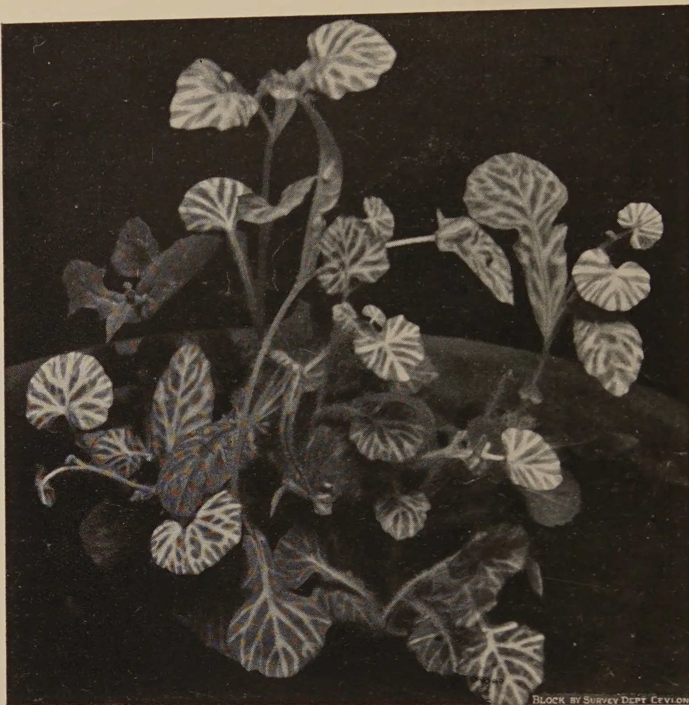
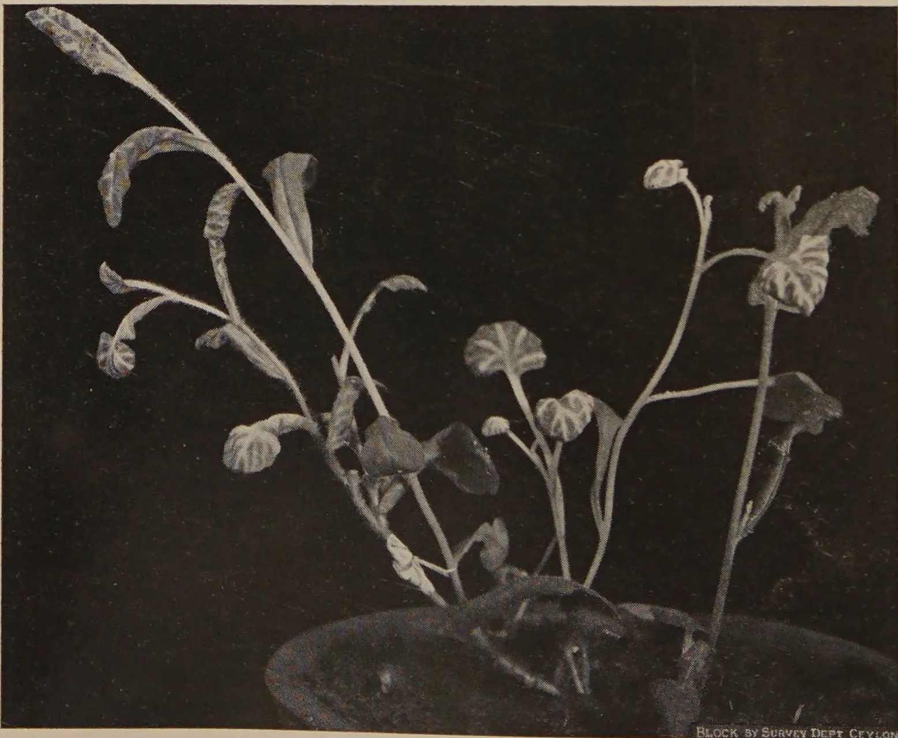

VOL. XCVII
PERADENIYA, JULY, 1941.
No. 1
| Page | |
|---|---|
| Editorial .. .. . | 1 |
| The Effect of Manuring Coconut Palms on the Oil and Protein Contents of the Copra. By Reginald Child, B.Sc., Ph.D. (Lond.), F.I.C., and M. L. M. Salgado, B.Sc. (Lond.), Ph.D. (Cantab.), Dip. Agric. (Cantab.) .. .. . | 4 |
| Cultural Experiments with Turmeric (Cucurma domestica Val.). By W. R. C. Paul, M.A. (Cantab.), Ph.D., M.Sc. (Lond.), D.I.C., and M. Fernando, Ph.D., B.Sc. (Lond.), D.I.C. .. .. . | 10 |
| Some Results of Harrowing a Growing Rice Crop. By G. V. Wickramasekera, A.I.C.T.A. (Trinidad), Dip. Agric. (Poona) .. .. . | 14 |
| A Virus Disease of Emilia scabra. By C. A. Loos .. .. . | 18 |
| Report on the Work in Progress in the Chemical Division of the Department of Agriculture .. .. . | 22 |
| Rotational Farming Scheme, Kurundankulam, North-Central Province .. .. . | 28 |
| Balsa Wood .. .. . | 35 |
| Industrial Uses of Cashew and its Products .. .. . | 37 |
| Mixed or Multiple Cropping in Native Agricultural Practice .. .. . | 40 |
| Lime and Liming .. .. . | 46 |
| Report of the Proceedings of the Third Meeting of the Central Board of Agriculture held on June 2, 1941 .. .. . | 50 |
| Animal Disease Return for the Month ended June, 1941 .. .. . | 56 |
| Meteorological Report for the Month ended June, 1941 .. .. . | 57 |
1—J. N. A 4690 (7/41)
[Faint page: no legible print of its own could be verified; text withheld (stage 4 review list)]
This image shows a single, blank page of aged paper. The paper has a warm, light brown or tan color, characteristic of old documents. There are subtle variations in tone across the surface, with some areas appearing slightly darker or more yellowed than others, suggesting uneven aging or exposure. Faint, irregular smudges and small dark spots are scattered across the page, particularly towards the edges. The texture of the paper is visible, showing a slight graininess. The overall appearance is that of a flyleaf or endpaper from an old book, with no text or other markings present.The
Tropical Agriculturist
JULY, 1941
EDITORIAL
AGRICULTURAL EDUCATION AND THE
CIVIL SERVICE
FIVE years ago the Executive Committee for Agriculture and Lands created a special grade of officers, recruited in a probationary capacity from University graduates in science, to serve as the nursery in which future holders of higher appointments in the field branch of the agricultural service would be reared. When three posts in this grade were advertised in 1937 it was hoped to recruit men with good honours degrees; but the only suitable candidate with an honours degree withdrew his application, and the Department had to be satisfied with the pass degree; and even in that class the field of choice was not extensive. Within six months two of the three selected candidates applied for posts of about the same grade in other Government Departments. The apparent inconsistency between this experience and the general belief that the graduates whom the University College turns out find it increasingly difficult to secure employment merits examination.
The agricultural student's preliminary education must include biology and chemistry. These subjects are not popular with the average "examination wallah" who prefers the more precise and more theoretical mathematics and physics. In a country in which neither the course of studies which a young man pursues nor the profession which he eventually adopts is always determined by special aptitude or by what may be described as a vocational call, some inducement is necessary to persuade students to move away from the beaten track. The conditions of service in the Department of Agriculture do not provide that inducement. On the contrary, these conditions repel rather than attract. Initiative and personal resourcefulness rather than the correct application of physical laws
2are necessary for successful achievement in the activities of a field officer of the Department. He must be not only a scientist and an agriculturist but also a psychologist. Failure is easy, and the reward of success must be proportionately alluring. But the prospects are poorer than those of other departments of similar status. There are no other fields of employment in which the possession of qualifications in the less theoretical sciences is regarded as a special claim in favour of a candidate. The result is a dearth of young men who possess, if not an education in the science of agriculture, at least a knowledge of the fundamental sciences that lead to a study of agricultural science.
Recruitment to the Department of Agriculture is only a minor problem. There is a demand throughout the country that our educated young men should take a lead in the application of science to agriculture. Since neither natural inclination nor the prospect of a career at present attracts them to a course of studies that will equip them for this mission the interests of the country require that the necessary bias should be created by some artificial stimulus. In the search for such a stimulus clues are supplied by a quotation in a daily paper from the Educational Supplement of the Times and by an order of the Government of Madras published in the issue of the Madras Agricultural Journal for the month of June, 1941. The former quotes the opinion of an experienced teacher that during a visit to Australia he found that some of the best educated people he met were students from agricultural colleges. The latter makes the Collector and the District Agricultural Officer jointly responsible for the agricultural programme of each district. There is no doubt that the ambition of most well-educated and clever young men in this country is to enter the Civil Service. If they succeed in getting into that Service and become district officers a knowledge of agricultural science will be very useful to them should they follow the lead from Madras. If they fail we have the testimony of the contributor to the Times Supplement that education in an agricultural college is as good as any form of general education in a young man's preparation for life. The conclusion will become apparent to our readers that the stimulus for an agricultural education which we were seeking will be provided by the inclusion of Agricultural Science as a subject for the Civil Service with some weightage in marking in its favour.
3It is with regret that we announce to our readers that, owing to war-time conditions, The Tropical Agriculturist will be published quarterly instead of monthly from the beginning of 1942 till the end of the war.
EDITOR,
The Tropical Agriculturist.
WE have been informed by Government that it is unlikely that any further supplies of inorganic nitrogenous fertilizers will be imported into Ceylon for the period of the war. It is suggested that tea and rubber planters should so arrange their manurial mixtures as to obtain their requirements of nitrogen from organic manures such as groundnut cake, castor cake, coconut poonac and compost.
EDITOR,
The Tropical Agriculturist.
REGINALD CHILD, B.Sc., Ph.D. (Lond.), F.I.C.,
DIRECTOR OF RESEARCH, COCONUT RESEARCH SCHEME
AND
M. L. M. SALGADO, B.Sc. (Lond.), Ph.D. (Cantab.), Dip. Agric.
(Cantab.),
SOIL CHEMIST, COCONUT RESEARCH SCHEME
COCOONUT oil is, and will probably remain, the chief commercial product of the coconut palm. The final criterion of yield in manurial and other experiments on the palm should therefore be the quantity of oil obtained per acre. In practice it is not, of course, possible to crush separately the copra from a large number of experimental plots and the presentation of results on the basis of copra yields has to suffice. It is not even necessary to prepare copra, since Pieris (1) has shown that the correlation between weight of husked nuts and corresponding copra weight is very high and that copra yields are estimated sufficiently accurately even for experimental purposes as 32 per cent. of the weight of the husked nuts.
It is at the same time important to know whether manurial applications to coconut palms have any pronounced influence on the oil content of the copra produced. To examine this question moisture and oil determinations were carried out on samples of copra from selected plots of a manurial trial conducted by the Coconut Research Scheme at Bandirippuwa Estate, Lunuwila, Ceylon. This experiment (which will be reported in detail elsewhere) is a duplicated factorial experiment in which are compared all the combinations of nitrogen, phosphoric acid and potash applied at nil, single and double doses. The plots selected for the present study were the sixteen receiving double doses of fertilizers, the treatments being shown with the complete data in Table I.
Each plot contains eighteen trees and the crop is collected every two months. The experiment was laid down in November, 1934, and fertilizers applied for the first time in
51
TABLE I.
| Pick No. | Date of Pick | Date of Copra curing | Treatment | Plot No. | M. II 7 | M. II 8 | M. II 9 | M. II 10 | M. II 11 | M. II 12 | Average for year, combining duplicate plots for each treatment | ||||||||||||||
|---|---|---|---|---|---|---|---|---|---|---|---|---|---|---|---|---|---|---|---|---|---|---|---|---|---|
| December 17, 1936 | February 11, 1937 | April 14, 1937 | June 15, 1937 | August 12, 1937 | October 13, 1937 | ||||||||||||||||||||
| H2O | Oil | Oil (Dry Wt.) | H2O | Oil | Oil (Dry Wt.) | H2O | Oil | Oil (Dry Wt.) | H2O | Oil | Oil (Dry Wt.) | H2O | Oil | Oil (Dry Wt.) | H2O | Oil | Oil (Dry Wt.) | H2O | Oil | Oil (Dry Wt.) | |||||
| N. | P. | K. | |||||||||||||||||||||||
| 0 | 0 | 0 | 8 | 7.0 | 64.4 | 69.2 | 6.1 | 65.6 | 69.8 | 8.0 | 64.1 | 69.7 | 5.1 | 65.3 | 68.8 | 7.9 | 64.1 | 69.6 | 6.7 | 63.5 | 68.1 | 6.5 | 64.6 | 69.1 | |
| 28 | 5.9 | 64.4 | 68.5 | 5.8 | 65.2 | 69.3 | 6.2 | 65.0 | 69.3 | 6.1 | 65.0 | 69.2 | 6.5 | 65.2 | 69.7 | 6.5 | 63.8 | 68.2 | |||||||
| 2(C) | 0 | 0 | 17 | 6.7 | 62.9 | 67.4 | 5.7 | 66.4 | 70.4 | 7.4 | 63.8 | 68.9 | 5.6 | 64.5 | 68.3 | 6.5 | 64.9 | 69.4 | 6.0 | 64.5 | 68.6 | ||||
| 40 | 6.5 | 63.8 | 68.2 | 5.9 | 64.3 | 68.4 | 6.3 | 66.1 | 70.5 | 5.6 | 65.4 | 69.5 | 7.2 | 65.1 | 70.2 | 7.7 | 62.8 | 68.0 | |||||||
| 0 | 2 | 0 | 15 | 5.8 | 64.2 | 68.2 | 5.5 | 66.5 | 70.5 | 7.2 | 64.9 | 69.9 | 6.0 | 64.9 | 69.0 | 6.2 | 65.8 | 70.2 | 6.1 | 64.8 | 69.0 | ||||
| 37 | 5.5 | 65.5 | 69.3 | 5.6 | 65.7 | 69.6 | 6.6 | 64.5 | 69.1 | 5.7 | 65.3 | 69.3 | 6.8 | 65.7 | 70.5 | 6.6 | 63.8 | 68.3 | |||||||
| 0 | 0 | 2 | 21 | 7.0 | 63.5 | 68.3 | 5.2 | 66.1 | 69.7 | 7.4 | 65.3 | 69.4 | 5.1 | 66.0 | 69.7 | 6.6 | 65.5 | 70.3 | 6.3 | 64.7 | 69.0 | ||||
| 46 | 6.0 | 64.4 | 68.6 | 4.9 | 66.7 | 70.1 | 6.7 | 65.4 | 69.1 | 5.8 | 66.7 | 70.8 | 6.8 | 66.1 | 70.8 | 7.4 | 63.6 | 68.7 | |||||||
| 2(S) | 2 | 0 | 19 | 6.9 | 63.8 | 68.5 | 4.9 | 66.6 | 70.1 | 7.4 | 64.6 | 69.8 | 6.3 | 65.5 | 69.9 | 5.9 | 66.0 | 70.1 | 5.5 | 65.8 | 69.6 | ||||
| 53 | 5.4 | 64.8 | 68.4 | 6.1 | 65.9 | 70.2 | 7.0 | 64.4 | 69.3 | 6.2 | 65.5 | 69.8 | 8.4 | 64.5 | 70.4 | 7.6 | 62.9 | 68.1 | |||||||
| 2(S) | 0 | 2 | 2 | 5.8 | 65.7 | 69.7 | 5.6 | 64.4 | 68.3 | 7.7 | 63.4 | 68.7 | 5.6 | 64.3 | 68.1 | 6.0 | 65.4 | 69.6 | 7.0 | 64.4 | 69.2 | ||||
| 34 | 5.7 | 64.1 | 68.0 | 6.0 | 65.2 | 69.3 | 6.7 | 64.1 | 68.7 | 5.4 | 65.7 | 69.4 | 7.1 | 65.7 | 70.7 | 6.6 | 65.0 | 69.6 | |||||||
| 0 | 2 | 2 | 5 | 6.8 | 65.1 | 69.8 | 6.0 | 64.0 | 68.1 | 8.1 | 64.0 | 69.7 | 5.2 | 66.1 | 69.7 | 6.3 | 65.5 | 69.9 | 5.2 | 65.3 | 68.8 | ||||
| 33 | 5.6 | 64.5 | 68.4 | 5.9 | 65.4 | 69.5 | 7.0 | 64.6 | 69.5 | 6.5 | 64.7 | 69.2 | 6.5 | 65.9 | 70.5 | 6.2 | 64.2 | 68.4 | |||||||
| 2(G) | 2 | 2 | 16 | 6.6 | 64.2 | 68.7 | 5.7 | 64.4 | 68.3 | 7.3 | 65.1 | 70.2 | 5.7 | 64.9 | 68.8 | 7.1 | 64.8 | 69.8 | 5.8 | 65.3 | 69.3 | ||||
| 38 | 6.4 | 63.8 | 68.0 | 5.4 | 66.4 | 70.3 | 6.6 | 65.8 | 70.4 | 5.5 | 65.8 | 69.6 | 7.4 | 65.2 | 70.4 | 7.9 | 63.0 | 68.4 | |||||||
| 6.2 | 64.3 | 68.6 | 5.6 | 65.6 | 69.5 | 7.1 | 64.6 | 69.6 | 5.7 | 65.4 | 69.3 | 6.8 | 65.3 | 70.1 | 6.6 | 64.2 | 68.7 | ||||||||
| 6.35 | 64.90 | 69.30 | |||||||||||||||||||||||
Date of application of fertilizers : November, 1935.
Applications :
N2 = 1.0 lb. nitrogen per palm
P1 = 2.0 lb. P2 O3 per palm, as 6.56 lb. Sulphos Phosphate.
K2 = 1.5 lb. K2 O per palm, as 3.0 lb. 50 per cent. Muriate of Potash.
In plots 17 and 40 : 5.26 lb. Calcium cyanamide.
In plots 19, 53, 2 and 34 : 4.85 lb. sulphate of ammonia.
In plots 16 and 38 : 13.16 lb. Groundnut cake.
November, 1935. The samples for the present work were from the six picks of the second year after manuring, viz., from December, 1936, to October, 1937.
Sampling and Analysis.—At each pick two nuts were collected separately from each tree, giving 36 nuts for each plot. These sixteen lots of 36 nuts were separately converted into copra, curing being done about a month after plucking according to the usual local practice.
Reduction of the samples for analysis was carried out by the method previously described (2).
Moisture was determined by drying at 100°C (see comments in ref. 2) and oil by extracting the dried samples with light petroleum (B. Pt. 40–60°C) in a Bolton-Revis apparatus. All determinations were carried out in duplicate and were repeated in the few cases which failed to agree within 0·5 per cent. of oil.
Results.—The complete results are given in Table I. It will at once be apparent that there is no indication that the differential manurial treatments are reflected in the oil percentages of the copra samples. In fact the small variation is surprising, the coefficient of variation for the 96 figures being 1·2 per cent.
In the previous paper (2) no differences were observed between the average oil percentages of copra samples from six estates in different parts of Ceylon; these estates represented soil types which must have varied considerably in fertility.
Patel (3) quotes oil percentages of copra from 17 plots receiving different manurial treatments in a trial carried out in Madras, which he states appear to show that all treatments increased the oil content. His oil percentage figures were obtained by crushing the copra in a country oil mill. The recovery of oil by this means is very low, Patel's percentages averaging 55·0 per cent., and the process is very variable. He himself admits that "it would have been more accurate if the determinations were carried out by chemical methods". We consider it very doubtful that much value attaches to his figures, since our experience is that it is quite impossible to obtain results with a country oil mill sufficiently consistent for experimental purposes.
At the same time whilst we claim that our present work shows clearly that under the conditions described manurial treatments have not influenced the oil content of the copra, the limitations of this statement must be recognized. The palms on the experimental field are mature palms, perhaps 40 years old at the time of commencement of the trial. Up to 1935 they had (presumably) received identical manuring and
7cultivation treatments, only being treated differentially with the application of the fertilizer treatments in November, 1935. It is not impossible that significant differences of oil content might begin to show themselves after the palms have been differentially treated for a longer period, and it will be of interest to repeat the observations on copra samples from the same plots in a later year.
The average oil content of the present 96 copra samples was 69.3 per cent. (dry weight), a figure rather higher than the general mean of 68.3 per cent. previously found for 52 samples of Ceylon Estate Copra drawn from all over the Island (2). This difference, if any significance attaches to it, may be related to the fact that Bandirippuwa Estate has been, in general, maintained at a higher level of fertility than the estates from which the 52 previous samples were drawn.
Oil/Husked Nut Ratio.—Since the oil content of copra is fairly constant a simple extension of the copra/husked nut ratio of 32 per cent. can be made. Table II. shows the yields of the 16 plots during the period over which the copra samples were taken for the present study. Figures are given for weight of husked nuts, weight of copra, oil percentage of copra and the copra/husked nut and oil/husked nut ratios. The latter ratio does not vary much from 20.5 per cent.
TABLE II.Total plot yields for the year December, 1936, to October, 1937 (M. II), showing weight of husked nuts and copra weights, and also the copra/husked nut and oil/husked nut ratios.
| Treatment | Plot No. | Wt. of husked nuts (lb.) | Wt. of Copra (lb.) | Copra/husked nut ratio | Average oil per cent. of copra | Oil/husked nut ratio |
|---|---|---|---|---|---|---|
| 0 0 0 .. | 8 .. | 1,524 .. | 482 .. | 31.6 .. | 64.5 .. | 20.4 .. |
| 28 .. | 1,876 .. | 595 .. | 31.7 .. | 64.8 .. | 20.5 .. | |
| 2 0 0 .. | 17 .. | 2,348 .. | 743 .. | 31.6 .. | 64.5 .. | 20.4 .. |
| 40 .. | 2,270 .. | 709 .. | 31.2 .. | 64.6 .. | 20.2 .. | |
| 0 2 0 .. | 15 .. | 2,165 .. | 690 .. | 31.9 .. | 65.2 .. | 20.8 .. |
| 37 .. | 1,706 .. | 537 .. | 31.5 .. | 65.1 .. | 20.5 .. | |
| 0 0 2 .. | 21 .. | 2,250 .. | 699 .. | 31.1 .. | 65.0 .. | 20.2 .. |
| 46 .. | 2,065 .. | 656 .. | 31.8 .. | 65.5 .. | 20.8 .. | |
| 2 2 0 .. | 19 .. | 1,948 .. | 620 .. | 31.8 .. | 65.4 .. | 20.8 .. |
| 53 .. | 1,649 .. | 550 .. | 33.3 .. | 64.7 .. | 21.5 .. | |
| 2 0 2 .. | 2 .. | 1,908 .. | 610 .. | 32.0 .. | 64.6 .. | 20.7 .. |
| 34 .. | 2,193 .. | 662 .. | 30.2 .. | 65.0 .. | 19.6 .. | |
| 0 2 2 .. | 5 .. | 1,812 .. | 577 .. | 31.8 .. | 65.0 .. | 20.7 .. |
| 33 .. | 1,809 .. | 567 .. | 31.3 .. | 64.9 .. | 20.3 .. | |
| 2 2 2 .. | 16 .. | 2,606 .. | 830 .. | 31.8 .. | 64.8 .. | 20.6 .. |
| 38 .. | 1,968 .. | 629 .. | 32.0 .. | 65.0 .. | 20.8 .. | |
| Total | 32,097 | 10,156 | 31.60 | 64.90 | 20.51 | |
| Average | 2,006 | 635 |
The practical oil yield of copra of average oil content 64.9 per cent. when crushed in hydraulic presses or efficient expellers would be about 62.9 per cent. (cf. reference 2). Twenty per cent. of the husked nut weight would, therefore, give an estimate of the commercial oil yield obtainable, sufficiently close for practical purposes.
Protein Content.—Nitrogen was estimated by Kjeldahl's method on the oil-free extracted meals from the samples of two series M. II 10 and M II 11, with the results shown in Table III.
TABLE III.| Treatment | Plot No. | M. II 10 | M. II 11 | |||
|---|---|---|---|---|---|---|
| Nitrogen % (Dry weight) |
Nitrogen % (Dry weight) |
|||||
| 0 0 0 .. | 8 .. | 3.82 | .. | 3.59 | ||
| 28 .. | 3.21 | .. | 3.49 | |||
| 0 0 2 .. | 21 .. | 3.68 | .. | 3.76 | ||
| 46 .. | 3.75 | .. | 3.74 | |||
| 0 2 0 .. | 15 .. | 3.80 | .. | 3.26 | ||
| 37 .. | 3.61 | .. | 3.35 | |||
| 0 2 2 .. | 5 .. | 3.80 | .. | 3.69 | ||
| 33 .. | 3.67 | .. | 3.65 | Mean of total samples from no nitrogen plots |
||
| Means no nitrogen plots |
3.67 | 3.57 | 3.62 | |||
| 2 0 0 .. | 17 .. | 3.35 | .. | 3.58 | ||
| 40 .. | 3.47 | .. | 3.64 | |||
| 2 0 2 .. | 2 .. | 3.56 | .. | 3.67 | ||
| 34 .. | 3.76 | .. | 3.69 | |||
| 2 2 0 .. | 19 .. | 3.78 | .. | 3.55 | ||
| 53 .. | 3.72 | .. | 3.45 | |||
| 2 2 2 .. | 16 .. | 3.53 | .. | 3.48 | ||
| 38 .. | 3.61 | .. | 3.49 | Means of total samples from plots receiving 1 lb. nitrogen per palm |
||
| Means { Plots receiving 1.0 lb. nitrogen per palm |
3.60 | 3.57 | 3.58 | |||
General mean N % = 3.60
These results show clearly that manuring at the rate of 1 lb. nitrogen per palm has not, in the second year after application, affected the nitrogen content of the copra. If the results are re-arranged with respect to potash or phosphoric acid treatments, it is apparent that these treatments have also caused little or no variation in nitrogen content.
| Average Nitrogen per cent. (Dry weight) |
|
|---|---|
| 16 samples from P0 plots | .. 3.61 |
| 16 samples from P2 plots | .. 3.59 |
| 16 samples from K0 plots | .. 3.54 |
| 16 samples from K2 plots | .. 3.66 |
Acknowledgements.—Our thanks are due to Mr. W. R. N. Nathanael, B.Sc., Technical Assistant to the Technological Chemist, who assisted with the analytical work, and to Mr. M. G. Fonseca, Field Assistant to the Soil Chemist, who was responsible for the field work.
Summary.—During the second year after application, different fertilizer treatments to coconut palms did not affect the oil or nitrogen content of the copra.
The average moisture and oil contents of 96 samples of copra examined were, moisture 6.35 per cent., oil 64.9 per cent., oil (dry weight) 69.3 per cent. The average nitrogen content of the dry oil-free extracted meals was 3.60 per cent.
An estimate of the oil yield obtainable from nuts, sufficiently accurate for practical purposes, is obtained by taking 20 per cent. of the weight of the husked nuts.
W. R. C. PAUL, M.A. (Cantab.), Ph.D., M.Sc. (Lond.), D.I.C.,
AGRICULTURAL OFFICER, CENTRAL DIVISION
AND
M. FERNANDO, Ph.D., B.Sc. (Lond.), D.I.C.,
ASSISTANT BOTANIST
THE high price and the limited availability of land in the wet zone of Ceylon make spacing a factor of considerable importance in turmeric growing in this country. The turmeric grower usually spaces his plants one foot apart between and within rows. This paper reports the results obtained with closer and wider spacings.
A turmeric crop occupies the land for as long as ten months, and the possibility of taking a catch crop off the area in the interval between the planting and the sprouting of the turmeric has occasionally been explored. Dwarf French beans (Phaseolus vulgaris L.), in view of their extremely short age, probably constitute the most popular choice in catch crops grown at the elevation between 1,000 and 2,000 feet where conditions are most suitable for turmeric cultivation. The practice of interposing this bean crop compels the postponement of the application of the straw mulch till the beans are lifted. On the other hand, the turmeric may be benefited by the legacy of accumulated nitrogen left over in the soil by the legume. The residual effect on the turmeric of the practice of taking a crop of beans off the area was investigated in the experiment presented in this paper.
The relative suitability of mother setts and of "fingers" for purposes of seed was also studied.
The following treatments were included in a unreplicated factorial design of 27 plots :—
| Three types of seed | { | T0—"Fingers" of the local variety |
| T1—Whole mother setts of the local variety | ||
| T2—"Fingers" of the variety Poona |
| Three spacings | { | — by ft. |
| —1 by 1 ft. | ||
| — by ft. | ||
| Three mulching treatments | { | —unmulched |
| —mulched with rice straw at planting time | ||
| —mulch of rice straw applied after a crop of dwarf French beans, sown at the time of planting of the turmeric had been removed |
The 27 plots were disposed in 3 blocks of 9 plots each. Two of the eight degrees appropriate to the second-order interaction, , were confounded with block differences. The remaining six degrees of freedom were available for the estimate of error. For details of the design, reference may be made to Yates (1937).
The plots were square and acre in extent. Guard rows were discarded and a nett area of acre was harvested from each plot.
The experiment was conducted at the Experiment Station, Nugawela, in the 1940–41 season. The soil of the experimental area was a lateritic loam of average fertility and rather acid in reaction.
The rhizomes were planted and, in the plots, dwarf French beans dibbled on May 10, 1940. A mulch of 20 lb. rice straw per plot (6 tons per acre) was applied to the plots on the date of planting. Germination of the beans was satisfactory; the percentage germination on May 15, was 90. On May 24, vacancies in the beans were filled, and the and plots were given a light soil mulch.
The turmeric commenced sprouting during the period May 29–31, the sprouting appearing earlier in plots mulched with straw.
An epiphytotic of bean-fly (Agromyza phaseoli Coq.) unfortunately devastated the bean crop. It was harvested on July 1, and a straw mulch (20 lb. per plot) applied to the plots on this date.
Vacancies in the turmeric crop were supplied on June 12. Plants of the local variety grown from mother setts exhibited the most vigorous vegetative growth and tillering. Plants spaced closest, however, appeared to be least affected by the spell of dry weather which occurred in the latter half of the growing season.
Stem-borer (Dichocrocis punctiferalis Guen.) appeared to be most damaging to the vegetatively vigorous plants; the incidence of the pest was lowest in the plots with the closest spacing.
12The area received two weedings. The turmeric flowered on October 2, and was lifted on February 3, 1941.
The weights of rhizomes produced by plots subjected to the various treatments, are given in Table 1, and the analysis of variance of these figures in Table 2. The spacing variance shows significance at the 5 per cent. point. None of the other main effects or first order interactions are significant.
There was evidently little difference in performance between the variety Poona and the local variety. In the local variety the superiority of mother setts to "fingers" was not appreciable.
The considerable increase in yield produced by the application of a straw mulch on the date of planting was not significant. The failure to demonstrate significance in this instance should be interpreted in terms of the low number of degrees of freedom available for the estimate of error and of the extremely small plot-size. The examination of individual spacing totals reveals the significant superiority of the closest spacing, viz., ft., to both the other spacings. The large and significant difference between the optimum spacing, viz., ft., and the spacing almost universally adopted by the turmeric grower lend these data considerable interest.
The results of an experiment conducted in the 1940-41 season, at the Experiment Station, Nugawela, for the purpose of examining the effect of spacing, mulching and kind of seed on the yield of turmeric, are presented.
Plants spaced ft., yielded a significantly greater weight of uncured rhizomes than plants spaced either ft., or ft.
There were no other significant effects.
We are grateful to Mr. E. C. Wirasinha, Agricultural Instructor, Katugastota, for his careful supervision of the field operations.
Paul, W. R. C., & Fernando, M., 1941—Cultural Experiments with turmeric (Cucurma domestica Val.). I. The influence of mulching and of the size of seed on the yield of some varieties of turmeric. The Tropical Agriculturist, Vol. XCVI.
Yates, F., 1937—The design and analysis of factorial experiments. Imperial Bureau of Soil Science, Tech. Comm. No. 35.
13TABLE 1.—Yields of uncured rhizomes in lb.| TYPES OF SEED | |||||
|---|---|---|---|---|---|
| T0 | T1 | T2 | Total | ||
| SPACINGS | S0 .. | 21.25 | 40.25 | 34.00 | 95.50 |
| S1 .. | 32.25 | 41.00 | 56.75 | 130.00 | |
| S2 .. | 72.25 | 73.75 | 57.75 | 203.75 | |
| Total | 125.75 | 155.00 | 148.50 | 429.25 | |
| MULCHINGS | |||||
| M0 | M1 | M2 | Total | ||
| SPACINGS | S0 .. | 22.00 | 43.25 | 30.25 | 95.50 |
| S1 .. | 28.75 | 46.00 | 55.25 | 130.00 | |
| S2 .. | 66.50 | 94.00 | 43.25 | 203.75 | |
| Total | 117.25 | 183.25 | 128.75 | 429.25 | |
| MULCHINGS | |||||
| M0 | M1 | M2 | Total | ||
| TYPES OF SEED | T0 .. | 51.50 | 48.00 | 26.25 | 125.75 |
| T1 .. | 26.00 | 80.25 | 48.75 | 155.00 | |
| T2 .. | 39.75 | 55.00 | 53.75 | 148.50 | |
| Total | 117.25 | 183.25 | 128.75 | 429.25 | |
| DF | SS | MS | VR 5 per cent. 1 per cent | |||
|---|---|---|---|---|---|---|
| point. | point. | |||||
| Main effects | T | 2 | 52.42 | 26.21 | ||
| S | 2 | 679.53 | 339.765 | 8.98 | 5.14 | |
| M | 2 | 276.24 | 138.12 | 3.65 | 5.14 | |
| First-order interactions | TS | 4 | 164.92 | 41.23 | 10.92 | |
| TM | 4 | 391.08 | 97.77 | — | ||
| SM | 4 | 351.14 | 87.785 | |||
| Second-order interactions (TSM) | Error | 6 | 226.97 | 37.83 | ||
| Confounded with blocks | 2 | 184.48 | 92.24 | |||
| 26 | 2326.78 | |||||
G. V. WICKRAMASEKERA, A.I.C.T.A. (Trinidad), Dip. Agric. (Poona),
PADDY OFFICER
IN the March, 1940, issue of this journal, Vol. XCIV., No. 3, pages 146-159, the writer detailed results of investigations into various cultural treatments carried out to determine the effect on yield of harrowing a growing rice crop. In it the yields obtained and the economics of the various treatments tested were discussed; the practicability of the adoption of the simple and inexpensive method of using a wooden toothed-harrow for harrowing a growing rice crop was stressed, and the technique described. It was also pointed out that the scope for adopting the practice of transplanting in Ceylon was very much limited owing to the fact that (i.) on a rough computation about of the area under rice in maha is sown with short-termed varieties maturing in - months, the acreage under 4-month varieties predominating; in yala over 4.5 the acreage is sown with short-termed varieties maturing in -4 months, with 3-month varieties predominating; (ii.) the cost of raising seedlings in a nursery and of transplanting them is over Rs. 10 per acre and the increase in yield obtained by transplanting long-termed varieties is about 10-12 bushels. Short-termed varieties are not transplanted as the increase in yield is comparatively low while the cost remains the same; (iii.) in the large paddy tracts the various irrigation schemes are designed to provide irrigation for the cultivation of short-termed varieties only; and (iv.) labour is so scarce in these areas that even weeding is not practised.
Results of six field trials conducted both by private owners of paddy fields and by the Department are recorded below. They confirm the conclusions already reported, namely, that the yields of paddy could be appreciably increased by adopting the very economical method of harrowing a growing rice crop.
15TRIALSThe trials were conducted at Padiligama in Tissamaharama during maha 1939-40, at Batalagoda (Kurunegala District), Paranthan (Jaffna District), and Kiula near Ambalantota during yala 1940, and again at Batalagoda and Paranthan in maha 1940-41.
In conducting these trials no elaborate technique was employed as in the experiments reported previously (Wickramasekera, 1940) to permit the results being statistically analysed. Since this system of cultivation has passed the experimental stage the present trials were regarded more as demonstrations rather than experiments. In all cases the crop was sown broadcast in the customary manner and half of each block was harrowed when the seedlings were about 3-4 weeks old. The yields of the harrowed and the unharrowed blocks, in each case, were recorded in order to determine the yield difference. The percentage increase in yield obtained is striking.
[For Table see page 17.]
5. Paranthan.—Maha 1940-41; this block was cropped continuously and in the previous season it was manured but not so heavily as the block referred to in item 4. This season 4 cartloads of cattle manure and cwt. of nicifos per acre were applied. The season was unfavourable. Maha yields are usually lower than in yala. Unseasonal rain was experienced at flowering time and some damage was caused by the stem borer (Schoenobius bipunctifer).
6. Kiula.—Yala 1940; fields were prepared by mudding by buffaloes. No manures were applied.
It will be seen that where the standard of cultivation is poor, the response to harrowing the rice crop is greater. This system has been tried on long-termed varieties of rice when the crop was about 4 weeks old with equally encouraging results.
The technique of harrowing a growing rice crop is described in the article referred to above.
17Table showing the results of Harrowing a Rice Crop.| Locality | Season | Variety | Period from sowing to maturity. Months | Area harrowed Acres | Area unharrowed Acres | Yield of harrowed Area | Yield of unharrowed area | Increase in yield of the harrowed area over the unharrowed area | Per-cent increase | |||
|---|---|---|---|---|---|---|---|---|---|---|---|---|
| Total Bushels | Per acre Bushels | Total Bushels | Per acre Bushels | Total Bushels | Per acre Bushels | |||||||
| Padiligama | Maha 1939-40 | Pachchaiperumal | 3 | 4.67 | 4.67 | 239.5 | 51.28 | 191.75 | 41.06 | 47.75 | 10.22 | 24.9 |
| Batalagoda | Yala 1940 | Pachchaiperumal | 3 | 10 | 10 | 359.25 | 35.93 | 230.75 | 23.08 | 128.5 | 12.85 | 55.7 |
| Batalagoda | Maha 1940-41 | Vellai-Illankalayan | 4 | 5.88 | 5.88 | 102.75 | 17.47 | 68.50 | 11.65 | 34.25 | 5.82 | 49.95 |
| Parathan | Yala 1940 | Pachchaiperumal | 3 | 5 | 5 | 304.5 | 60.9 | 271.0 | 54.2 | 33.5 | 6.7 | 12.4 |
| Parathan | Maha 1940-41 | Vellai-Illankalayan | 4 | 7.50 | 7.50 | 286.5 | 38.02 | 203.00 | 27.9 | 83.5 | 11.1 | 40.9 |
| Kiula | Yala 1940 | Murunga | 3 | 2 | 2 | 57.0 | 28.5 | 72.0 | 18.0 | 15.0 | 10.5 | 58.3 |
C. A. LOOS,
TEA RESEARCH INSTITUTE OF CEYLON
THE disease of Emilia scabra DC which is described in this paper was first observed over an year ago in marsh land on an estate in the Talawakelle district.
At that time only a few diseased plants were seen, but now the disease is very common in that marsh area. The writer has since observed the disease on roadside plants about a mile from the marsh. Possibly it is more common in other districts.
A photograph of a typical diseased plant after transplanting to a six-inch pot is reproduced as Fig. 1.
Emilia scabra is a common weed of cultivated land as well as of roadsides and marsh land. Economically it is of little importance. This view may, however, have to be amended should the virus disease here described prove capable of injuring a major crop as the weed is so widely spread. There were no indications in the field that tea is susceptible to the disease though the diseased area bounded a tea estate.
The most characteristic symptom is the presence of broad yellow lines along the veins on the upper surface of the leaf. These lines are broader than the veins themselves, as the yellow colour spreads into the adjoining green tissues. The term yellow vein-banding has been used to describe this condition. Yellow vein-banding is marked on all the veins of affected leaves. On the under surface, the yellowing is not so pronounced as on the upper surface. There are no swellings on the veins or other distortion of the leaves. In very badly diseased plants, the yellowing spreads over the whole leaf surface.
Plants which carry healthy leaves at the base of the stems often have diseased leaves arising from the axils of the apparently healthy leaves. It is probable in such cases that the leaves formed before infection remain apparently healthy and do not develop any visible symptom. Evidence to support this probability is given later.
This image is a scan of a blank page. The paper has a light beige or cream-colored tint. There are some very faint, blurry marks scattered across the surface, which appear to be scanning artifacts or minor imperfections in the paper itself. No text, lines, or other graphical elements are present.PLATE I.

FIG. 1.—DISEASED Emilia scabra PLANTS. NATURAL INFECTION.

FIG. 2.—DISEASED SCION GRAFTED TO HEALTHY STOCK OF Emilia scabra. POSITION OF GRAFT INDICATED BY RAFFIA BINDING. PHOTOGRAPHED 3 WEEKS AFTER GRAFTING.
19TRANSMISSION EXPERIMENTSTo Emilia scabra.—Emilia plants from the field were transferred to six-inch pots and brought into the laboratory. Fifteen plants were kept as controls, the remainder being used for experiments. The experimental plants and the controls were placed in separate rooms to avoid accidental infection.
No disease symptom developed on any of the control plants.
By mechanical transmission and aphid inoculation.—Attempts to transmit the disease by juice expressed from diseased leaves, and with two unidentified species of aphids failed.
By grafting.—Attempts to transmit the disease by grafting were successful. Seven healthy Emilia scabra plants growing in six-inch pots were chosen. Diseased scions collected from the field were cleft grafted on to healthy stems of approximately the same size. Raffia was used to bind the grafts in position. The grafted plants were covered with bell jars to maintain humid conditions for 25 days, the bell jars being lifted for a short time daily for aeration. When complete fusion between stock and scion was made no wilting took place when the bell jars were removed.
TABLE I.—Diseased scions grafted to healthy Emilia stocks| Plant No. | No. of grafts made. | No. of Unions obtained. | Period between time of grafting and appearance of diseased symptoms. | Results. |
|---|---|---|---|---|
| 1 | 2 | 2 | 13 days | Positive |
| 2 | 2 | 1 | 14 " | Positive |
| 3 | 2 | 0* | 29 " | Positive |
| 4 | 2 | 2 | 14 " | Positive |
| 5 | 3 | 1 | 11 " | Positive |
| 6 | 1 | 0 | Negative | |
| 7 | 2 | 1 | 14 " | Positive |
* One imperfect union. See text.
From Table I it may be seen that the disease was transmitted in all plants where complete union was effected between stock and scion. Plant No. 3 is of interest in that transmission of the disease occurred even though complete union between stock and scion was not made. One of the two grafted stems wilted before the bell jar was removed, but the other did not wilt until 4 days after the removal of the bell jar. The delayed wilting of the latter scion after removal of the bell jar suggests that an imperfect union had been obtained and that the virus passed through that incomplete union. The disease symptoms were also later in making their appearance in this plant. In the others, symptoms occurred between 11 and 14 days after making the graft.
The disease symptoms first appeared as small yellow spots scattered haphazard on the veins of young leaves formed on
20axillary shoots from the grafted branches. The yellow spots later united; this resulted in a yellow vein-banding throughout the affected leaves. Where the grafted branches made little or no growth, disease symptoms appeared on other shoots growing more rapidly. In every case the disease became systemic on all new growth 7-10 days after the first symptoms were apparent. Fig. 2 is a photograph of plant No. 7, three weeks after the graft was made; raffia around the stem indicates the position of the graft. The branch at the further end of the pot remained healthy till shortly before the photograph was taken, when disease symptoms became apparent in the opening bud. All green leaves formed before the grafts were made remained green and apparently healthy throughout the experiment, but shoots formed in the axils of such leaves exhibited the symptoms in all leaves developed later.
The only negative case was plant No. 6, but here no fusion was made between stock and scion.
Attempts to transmit the disease by mechanical means to seedling plants of Harrison's Special tobacco failed.
The above experiments indicate that the disease of Emilia scabra here described is transmissible by grafting, and owing to the absence of a visible parasite, it is probably caused by a virus. A somewhat similar yellow vein-banding in Ageratum conyzoides has been described from Ceylon (1) and it was there suggested that the virus concerned was probably related to the virus of tobacco leaf-curl. No attempts have been made by the writer to transmit the disease to Ageratum or to tobacco other than those mentioned above. No opinion can therefore be offered concerning the relationships of this virus disease of Emilia.
Species of Emilia are known to be susceptible to the virus which causes spotted wilt of tomato and tobacco and yellow spot of pineapple (2). That virus, however, in Emilia produces a distinct mottling of the young leaves with subsequent development of circular, concentrically zoned spots which later may become necrotic. The symptoms of the Emilia disease here described are so very different that there is no reason to suspect that the spotted wilt virus is concerned.
A virus disease of Emilia scabra is described. The principal symptom is a yellow vein banding.
21The disease was successfully transmitted to healthy Emilia plants by grafting.
The symptoms are different from those known to be caused by the spotted wilt virus in Emilia.
I wish to record my thanks to Dr. C. H. Gadd, Mycologist of the Tea Research Institute of Ceylon, for his helpful criticism in the preparation of this paper.
THE more important work which the Chemical Division of the Department has undertaken in recent years and is at present carrying out, may be classified under the following heads :—
I shall deal with each of these separately.
Soil Investigations.—These necessarily constitute the major items of work in the Division. The investigations are of two types (a) those of more immediate practical interest and importance e.g., soil survey work, (b) those of a long range or more fundamental character, e.g., the study of the main soil groups of the Island. During the past few years, as a result of the policy laid down in 1935 that a soil survey report should be furnished in respect of every area proposed for development as a colonization or irrigation scheme, no fewer than 58 soil reconnaissance surveys were carried out by the Division. The areas thus surveyed ranged in extent from 300 to over 25,000 acres, as in the case of the Parakrama Samudra Scheme. It has to be emphasized, however, that these surveys are of a very preliminary nature and have for their object the ascertaining of the general suitability or otherwise of the whole or part of the areas in question for development. It is not claimed for them that they furnish all the requisite pedological data for the area surveyed. In this respect, the studies on the major soil groups and types of the Island are much more complete and on more fundamental lines. As a result, we have been
* A report read by the chemist at the meeting of the Central Board of Agriculture held on May 28, 1941.
23able to classify our soils on a sound, rational basis, and have secured valuable information on the nature and properties of our soils, and of their rough distribution. The results of these studies have been published in a series of papers to the Tropical Agriculturist. The more intensive study of the paddy soils of the Island to which reference was made at the last meeting of the Board, will shortly be taken in hand by Dr. Koch, the Research Assistant in Agricultural Chemistry.
The whole question of a successful rotation agriculturè in Ceylon, and in the tropics generally, hinges largely on the maintenance and improvement of soil fertility. Even were every measure taken to prevent the loss of the fertile top soil, experience and research have indicated that there is a marked deterioration of soil fertility when virgin soil is brought under cultivation with annual crops in the wet tropics. This is due to the climatic conditions favouring the rapid decomposition of organic matter and the leaching of mineral nutrients. The Division has accordingly, in co-operation with field officers, set in train a series of investigations to ascertain how soil fertility can be maintained under these conditions by (i.) cropping systems, viz., associated growth and rotational cropping (ii.) green manuring, liming, composting, &c., (iii.) the East African practice of pasture and grass fallows. In regard to the first of these measures, an experiment conducted at the Dambulla Experiment Station in co-operation with Dr. Paul, the Divisional Agricultural Officer, Central, has shown that it is much more advantageous to grow kurakkan and green gram in association with each other than as pure crops. Investigations have also been started to determine the changes brought about in the soil as a result of chena cultivation and the rate of recuperation of soil fertility during the reversion of the land to secondary jungle. The evidence so far obtained from four experimental centres of trial indicate that, provided no loss of soil occurs through erosion, there is but little change in the intrinsic composition of the soil immediately before and after chenaing. The reason for the adoption of the practice of shifting cultivation is not apparently to be sought in the loss of soil fertility. Excessive weed growth, necessitating either soil management and regular implemental tillage or high jungle shade, for its elimination, would appear to be a more likely reason.
It would be of interest here to mention that Dr. Koch has recently started an investigation which is both of academic interest and practical importance in Ceylon and the tropics, on the effects of sunlight on the organic matter and nitrogen contents of the soil.
Closely related to the problem of soil fertility is that of soil infertility. One of the main causes of soil infertility are "alkali"
24salts which, in badly-drained, irrigated areas rise to the soil surface during the dry weather as a result of the high water table, and prove detrimental to crops. Alkali soils occur in parts of the dry zone in Ceylon, but, at present, only in small extents. In view, however, of the extensive development of irrigation schemes in the Island and the likelihood of the problem becoming serious, if the necessary precautions are not taken in time, a comprehensive series of investigations is to be started in co-operation with the Irrigation Department to determine the measures necessary to prevent the development of alkali in irrigable soils which, though now free of the trouble, are likely to develop it if irrigated. Trials are also in hand to ascertain the most economical method of reclaiming for paddy cultivation a small area of alkali soil under one of the major irrigation schemes.
A good deal of attention has been given to the investigation of crop failures due to soil factors other than alkali. These failures have been traced to excessive acidity, lack of lime, deficiency of organic and inorganic nutrients, bad drainage, &c. A good example of crop failure or at any rate, poor crop growth, as a result of soil deficiencies, is furnished by citrus "chlorosis", which is characterized by the yellowing of the leaves, followed by the dieback of the branches and, not infrequently, the death of the tree. There is little doubt that in Ceylon this trouble is largely due to a lack of adequate manuring, liming and cultivation. In a few cases, a deficiency in the soil of one or more of the minor elements, viz., borax, zinc, &c., has been found to be the source of the trouble, but in all these instances, the trees had shown the symptoms despite normal manuring and liming.
Manurial and Cultural Trials.—The study of the soil in the laboratory though useful in many respects, is incomplete unless it is accompanied by field trials to determine its crop-yielding capacity, manurial and cultural requirements for particular crops, &c. Manurial and cultural experiments are, therefore, an important feature of the work of the Division. These are conducted at our experiment stations in close collaboration with Divisional and Crop Officers, and are designed on modern lines of field experimentation, permitting the statistical interpretation of the results. Much useful and reliable data on the manurial requirements of paddy and other economic crops such as chillies, cotton, ginger, fodder grasses, tomatoes, &c., have thus been obtained. Further trials on these crops and on tobacco, soybean, betel, citronella and fruit crops are in progress. One such trial has been designed to determine the best time and method of application of fertilizers to paddy; another is to ascertain whether hyperphosphate—a finely ground rock
25phosphate, now available in quantity, would be a suitable substitute for bone meal and other phosphatic fertilizers for manuring paddy. The indications are that this is the case. Both these trials were conducted in collaboration with the Paddy Officer.
However much the reserve of plant food material in a soil, yields of crop cannot be high unless the soil is cultivated. Trials have, therefore, been carried out with the Paddy Officer for the past two years at Bathalagoda Station, to determine how yields of paddy are affected by system of cultivation. The advantage of using a Ceres or light iron plough instead of a village plough has been very clearly demonstrated at this station, yield increases of over 30 per cent. having been obtained each season. The trials will be continued for a few years so that the cumulative effects of the treatments may be determined. Soil resistance studies are being made simultaneously.
Studies on Local Foods, their Nutritive Values and Economic Utilization.—The study of the nutritive values of local vegetable foods from the chemical standpoint has been one of the most important and interesting lines of work which the Division has undertaken in recent years. Over 265 samples of vegetable foods comprising grains, pulses, leafy and non-leafy vegetables, roots and yams, oil seeds, fruits and fruit products, and honeys have been analysed, in a number of instances for both organic and mineral constituents. A series of nine papers have been published in The Tropical Agriculturist, on the subject. These analyses have no doubt proved of some value to the Medical Department in their work on nutrition. A few interesting features of this work may perhaps be referred to here. Of local fruits, the humble "nelli" or Indian gooseberry, the cashew apple, and the guava are the richest sources of Vitamin C. The avocado pear has the highest calorific value. Gingelly is perhaps the most nutritious of local vegetable foods, being rich in proteins, fats, and calcium. Pinnatu, the dried pulp of the palmyrah fruit is a rich source of the easily digestible sugars, glucose and laevulose.
The question of the economic utilization of local foods, particularly fruits, has received such attention as has been possible with the limitations imposed by staff and more pressing demands on our time. It is gratifying to record, however, that the investigations carried out on the canning and bottling of local fruit, the preparation and preservation of fruit juices and cordials, &c., have proved fruitful in that small-scale industries in these lines have now been established locally. This has largely been made possible by the holding of training classes in fruit preservation in the laboratory for members of the public and others. Six such courses have been held up to now,
26and these are becoming more popular each year. I am sure Mr. Bassett will pardon me if I say that the work on fruit canning which he is now doing with such acceptance, had its origin in the Chemical Laboratory at Peradeniya, the special officer responsible for this work having received his training here. While on this subject it should be stated that during the past two years canning tests have been made on 68 small samples of imported canning pineapple varieties, grown locally by the Botanist. The tests indicate that of these varieties Ripley and Rough Leaf are the most suitable for the purpose. Since 1937 preliminary trials with the cold storage of the more important varieties of Ceylon fruit have been conducted with the co-operation of the Horticultural Officer and the New Colombo Ice Co., and much useful information has been gained thereby. On the subject of fruit preserves, it may be of interest to remark that very satisfactory ginger preserves have been prepared by a modification of the Hong Kong method from imported China ginger grown locally as well as from a similar type of ginger cultivated in Ceylon.
The possibilities in regard to the economic utilization of local foods being so great, it was considered essential to appoint an officer who would devote his attention solely to this aspect of our work. Mr. C. Charavanapavan, Government Scholar, was accordingly sent to Great Britain to obtain the necessary training. He has completed his course of studies and has just joined the Division as Research Probationer in Food Technology. We can now confidently look forward to rapid advances in this field of our activities in future.
Chemical Investigations Relative to the Quality of Local Agricultural Products.—These investigations are of widerange and varied character. The following may be considered as typical :—
Other such investigations have dealt with ginger (curing and oil extraction), papain (quality and detection of adulteration), derris root (rotenone content), citrus fruits (colouring and rind oil extraction), oil seeds, e.g., castor, gingelly, soybean (yield and quality of oil), cinchona bark (quinine and other alkaloidal content), camphor cuttings and cinnamon roots (camphor), annato seed (dye extraction methods), &c.
There are other important aspects of our work which I cannot deal with now, but I should wish to make a brief reference to the advisory analytical work which occupies a good part of our time and attention. Among the numerous samples examined are local fodders, feedingstuffs, manures, green manures, fertilizers, and waste materials suited for use as feedingstuffs, manures or composting. We have thus obtained a considerable amount of data which we have published in The Tropical Agriculturist from time to time. We will be prepared to examine any such samples as are likely to prove of special interest to agriculturists, which members of this Board or of the public might send us.
28G. HARBORD, Dip. Agric. (Wye),
AGRICULTURAL OFFICER, GRADE I
THIS article describes stages covering a period of 3 years in the development of a peasant settlement in the dry zone, where conditions are exacting and the crops to be raised must depend entirely upon the rainfall of the north-east monsoon falling from October to December followed by a minor or short-term crop season dependent on rain falling in April-May. In circumstances like these the building up of a cash reserve and of stocks of food for man and beast becomes a sheer necessity for the settler to enable him to tide over unproductive seasons resulting from climatic inconsistencies over which he has no control. Reference is made to the economics of the scheme, affecting both Government and the settler, and an attempt is made to show the annual gross cash income which a settler who has become well established on a mixed farm of 10 acres might reasonably expect to earn.
The main object of the scheme is to ascertain whether, with assistance and guidance, the Vanni villagers can be successfully trained to substitute for the chena system of cultivation a method of established mixed farming with the use of simple implements and earn from it an income which will provide for more than bare subsistence. In its conception it was designed to operate for the collection of crop records and other data which are unobtainable on a Government Farm worked entirely by hired labour.
The original intention was to develop a land adjoining a settled village, Lulwewa, but unfortunately this plan could not be carried through because of the great difficulty in inducing the villagers to come forward and operate the scheme. Eventually, a block of one hundred acres of unirrigable land under average jungle was selected at Kurundankulam situated five miles to the north-east of Anuradhapura and adjoining the Trincomalee road. This area which was demarcated to provide ten 10-acre allotments each with a road frontage, is generally undulating and has a good and fairly uniform depth of reddish brown friable soil. The farms are long and narrow and this is rather a disadvantage in practice.
29In January, 1938, ten familied men were locally recruited as prospective settlers. These men, who consisted of Kandyans, Low-country Sinhalese, and also two Tamils (one from Jaffna and one an Indian Tamil) had for several years been earning a precarious livelihood as agricultural labourers on private-owned lands outside Anuradhapura. It soon became evident that some of these men were mere adventurers to whom settled work was distasteful and so, after a patient trial of 18 months, steps were taken which eliminated the six misfits and substituted for them cultivators of a better type.
The fact that the present group of settlers, of whom seven are Kandyans and three Low-country Sinhalese, have shown increasing readiness to co-operate and assist one another in their activities is an encouraging sign for the ultimate success of the settlement. All have cleared their debts and are building up substantial Savings Bank balances. It is of interest to note that the four original settlers, including the only typical Vanni villager, are amongst the most progressive of the settlers.
Thirty acres (Block A) or three acres per allotment were opened up by the settlers and planted with chena crops—cereals, cotton, chillies, cucurbits, legumes and vegetables. At the same time coconuts, plantains and fruit trees (mango, orange, lime, papaw, sapodilla, breadfruit, jak, &c.), were planted in the residential garden acre of each of the holdings.
The houses were constructed by the settlers with assistance. These dwellings which were substantially built of palu, satinwood, ehela, and we-warana timber with wattle and daub walls and cadjan roofing consisted of two large living rooms, broad verandahs on all sides and a kitchen situated on the back verandah. They were built at a cost of Rs. 200 each. The roadside acre of each holding was selected for the sites of the houses so as to give the settlers an opportunity of increasing their income by catering for the requirements of the heavy pilgrim traffic which passes between Anuradhapura and Mihintale during festivals.
A communal well 9 feet in diameter and 28 feet deep was sunk at a cost of Rs. 1,275 and this gave a reliable and good water supply. A boundary barbed wire fence was erected for the protection of the cleared area. The required planting material—seed, seedling plants and fruit trees—was provided.
This year proved to be a particularly difficult stage in the development of the settlement. It should have been a period of settling down and of steady progress, but elements of unsettle-
30ment affected the situation for a while. It had been expected that the settlers would devote part of their time to the removal of stumps from their cleared areas, and to the provision of simple soil protective measures, but practically no work of this nature was accomplished by them. The settlers showed commendable keenness in the work of sowing, planting and harvesting their crops, and they maintained a succession of crops covering the land as long as any moisture remained in the soil. They were preoccupied in extracting the maximum income from the soil consistent with a minimum expenditure of energy on their part, but they were not anxious to work on the ground when it became hard during the dry season—the only time when the ground was free from crops.
In these circumstances, which are normal to dry zone agriculture on unirrigable lands, it was soon appreciated that it was beyond the capacity of the pioneer settler struggling for his very existence himself to reclaim his holding and bring it into a condition for implemental tillage. A change of policy was necessary and it was decided, in effect, that Government must create established farms on which the land would be cleared and brought under the plough, and the settlers provided with the necessary live and dead stock before the holdings were handed to them.
The equipment for an established farm was to include a house, a well, a set of tools and also farming implements, a pen of poultry, two milch cows, a pair of bullocks, two female goats, and also planting material (including a prescribed number of fruit trees). In addition a stud bull and a male goat would be made available for the settlement.
As the first step in this direction an additional thirty acres (Block B) or three acres per allotment was cleared by Government and a cover crop of dhal, cowpeas, cucurbits, and soybeans established for Maha 1939–40. In the meantime, the settlers repeated the cultivation of crops under chena conditions in Block A.
During this year rapid progress was made with the work of consolidating and settling down. Much of the material in live and dead stock required to equip the farm was procured. This included a set of tools, ploughs and other cultivation implements, poultry houses and runs, &c. A residential area of six acres on the opposite side of the Trincomalee road was developed and temporary buildings erected including quarters for an Agricultural Instructor, stores, and other necessary sheds. A residential Agricultural Instructor was appointed in September to control operations, to assist the settlers and to record data. Four additional wells were constructed. These were sunk to an
31average depth of 35 feet at a cost of Rs. 630 each. Seven pairs of untrained young Kinnaiya bulls were procured from Welikande in Tamankaduwa, at Rs. 100 per pair. Their handling and training to cart and plough has been a difficult and slow process.
Land reclamation work on Block B was undertaken. The operations carried out by manual labour included the removal of all stumps and roots to a depth of one foot, the levelling of termite mounds and also ploughing and harrowing. This work was begun in April and completed by September at a cost of Rs. 100 per acre.
This area was then handed over to the settlers as an established part of their holdings and was cultivated by them for the maha 1940-41 season with kurakkan, chillies and cotton. At the same time Block A, excluding the home garden area, i.e., 20 acres or two acres per allotment was taken in hand to be reclaimed in a similar manner, and a ground cover of dhal, cowpeas and cucurbits was established for the maha 1940-41 season—primarily for the protection of the soil until stump extracting work could be done early in 1941.
It is expected that the work of creating established farms will be completed in October, 1941. The remaining area of 40 acres or 4 acres per allotment (Block C) which is at present under jungle remains to be reclaimed. It is hoped to do this in 1941 using Caterpillar Tractor machinery.
In all the development work, the settlers themselves have taken an active part, receiving wages for work done. This arrangement has been of great benefit to the settlers as they have been able to increase their income substantially at a time when the earnings from their partially-developed holdings were insufficient for their needs, and at the same time they have received a training in planting methods, in mulching, which is essential for dry farming, in the handling of tillage implements, and in the handling and care of live stock—work in which they had practically no previous experience.
The progress of the development of the holdings is shown in Table I.
The following may be cited to indicate the yields of different crops obtained by the settlers :—
| Crop. | Yield per Acre. |
|---|---|
| Cotton (Cambodia) | .. 6 to 10 cwt. |
| Chillies (Tuticorin) | .. 4 cwt. green and 2 cwt. dried. |
| Gingelly (black) | .. 10 to 15 bushels |
| Kurakkan E 43 | .. 15 to 20 bushels |
| Menneri | .. 10 to 12 bushels |
| Dhal (Gujarat) | .. 200 lb. |
| Soybean { small seeded | .. 150 lb. |
| { Large seeded | .. 220 lb. |
The above represents actual yields from the better-grown crops. Accurate figures for the yields of vegetable garden crops and cucurbits were not obtainable as a large proportion of these crops were either consumed by the settlers or sold on the spot as they were harvested.
Accounts have been kept as far as possible of the income accruing to settlers from the sale of surplus produce. The highest cash income of an individual settler so recorded was Rs. 270 in the first year and Rs. 245 in the second year. Judging from results already obtained during the current year and with the increased area now under cultivation, it is probable that there will be a considerable increase in the cash income from each holding during the third and subsequent years.
The layout for an established holding of 10 acres has been tentatively fixed as follows :—
Acre 1 (nearest road).
House and garden : this will contain the house, a well, fruit trees—30 oranges, 6 jak, 12 coconut palms and 3 mangoes—the poultry run and vegetable garden. Murunga trees and kapok will be planted on the boundary.
Acre 2.
Fodder area : this will contain the cattle shed, compost heaps and pits and will be interplanted with mango trees.
Acre 3 & 4.
These two acres will be under pasture and plantation in rotation, the area being changed round once in 3 years. Mango trees will be planted in this block also, to provide shade for the cattle.
Acre 5-10.
Rotation area : this area of 6 acres will be planted with cereals, cotton, chillies and legumes in rotation, the complete rotation being one of three years or six seasons. The rotation is shown in Table 1.
The total expenditure by Government up to September 30, 1941, which includes the total allocation for the year 1940-41, amounts to about Rs. 28,000 or Rs. 2,800 per holding. It is estimated that the total sum which will have been spent on the scheme to bring it to the stage when the ten established farms will be handed over to the settlers will not exceed Rs. 44,000 or Rs. 4,400 per holding. This figure does not include overhead charges.
An attempt has been made to estimate the gross cash income in respect of surplus produce that may be derived from the
33established farm. The estimate is based on the average results already obtained by the settlers. This is given below in Table 2.
Should this income be obtained and maintained, the outlay by Government will be justified. Even at this early stage it has been made clear that successful dry zone farming is a particularly exacting occupation requiring untiring energy on the part of the farmer and a determination to carry out the various operations at the right time.
[For table 1 see page 53.]
TABLE 2
Kurundankulam Rotational Farming Scheme
Details of Annual Cash Income (Approximately) for an Allotment
| Crop. | Acreage. | Details. | Amount. | |
|---|---|---|---|---|
| Rs. | c. | |||
| Plantain .. | 1 acre | 300 commercial bunches at cents 75 each | 225 | 0 |
| Chillies .. | 2 acres | 12 cwt. green at Rs. 10 .. | 120 | 0 |
| 6 cwt. dried at Rs. 16 .. | 96 | 0 | ||
| 216 | 0 | |||
| Cotton .. | 2 acres | 10 cwt. at Rs. 11 .. | 110 | 0 |
| Gingelly .. | 1 acre | 12 bushels at Rs. 4 .. | 48 | 0 |
| Vegetables .. | 1½ acre | Including cucurbits, tomatoes, capsicum .. | 60 | 0 |
| Cereals .. | 2 acres— | |||
| Kurakkan ½ acre .. | } Kurakkan, Hill Paddy, Meneri, Sorghum, Cambu (exclusive of home consumption and for poultry) .. | 30 | 0 | |
| Hill paddy ½ acre .. | ||||
| Meneri ½ acre .. | ||||
| Cumbu ½ acre .. | ||||
| Legumes .. | 3 acres— | |||
| Rs. | c. | |||
| Dhal 1 acre .. | } Dhal, green gram, cow peas and groundnuts— | |||
| Green gram 2 .. | 10 bushels at Rs. 2 .. | 20 | 0 | |
| Cow peas 3 acres .. | 10 bushels at Rs. 4 .. | 40 | 0 | |
| Groundnut 1 acre .. | 10 | 0 | ||
| 70 | 0 | |||
| Sussex hemp.. | 3 acres | By sale of seed and fibre .. | 40 | 0 |
| Poultry .. | { A flock of 10 laying hens at 125 eggs per hen at 4 cents per egg .. | 50 | 0 | |
| 20 birds (cockerels, old hens and pullets for sale) .. | 20 | 0 | ||
| 70 | 0 | |||
| Goats .. | 2 young animals for sale at Rs. 15 each .. | 30 | 0 | |
| Permanent tree products—citrus, mango, jak, breadfruit, papaw, kapok, murunga, betel .. | 100 | 0 | ||
| 1,000 | 0 | |||
34
TABLE 1
Cropping Programme
| 1st Year | 2nd Year | 3rd Year | |||||||||||
|---|---|---|---|---|---|---|---|---|---|---|---|---|---|
| Jan. 1938 | Yala, 1938 | Maha 1938-39 | Yala 1939 | Maha 1939-40 | Yala 1940 | Maha 1940-41 | Yala 1941 | ||||||
| BLOCK A | Acres 1 | Jungle cleared Feb.-March, 1938. | Gingelly | (House and Garden) Plantains and fruit trees Adlay, Vegetables |
(House and Garden) Meneri and green gram Garden crops |
(House and Garden) Cambu and Sorghum Garden crops |
(House and Garden) Meneri and green gram Garden crops |
(House and Garden) Vegetables, fruit and plantains | (House and Garden) Vegetables crops, fruit and plantains | ||||
| Acres 2 | Jungle cleared Feb.-March, 1938 | Gingelly | Tuticorin chillies Marglobe tomatoes Cambodia cotton |
Chillies Cotton |
Kurakkan Dhal, cowpeas Maize |
Gingelly Dhal, cowpeas and meneri |
Dhal, cucurbits and maize | Dhal, meneri (stumping) | |||||
| Acres 3 | Jungle | Cleared July, 1938 | Kurakkan (failed) Cucurbits, Green gram, mustard |
Gingelly | Tuticorin chillies Cambodia cotton |
Chillies Cotton |
Dhal, cowpeas and maize | Dhal, meneri (stumping) | |||||
| Acres 4 | " | Jungle | Jungle | Jungle cleared July, 1939 | Dhal, cucurbits soybeans |
Meneri Dhal and cucurbits (stumping) |
Kurakkan | Gingelly | |||||
| Acres 5 | " | " | " | Jungle cleared July, 1939 | Dhal, cucurbits Soybeans |
Dhal and cucurbits (stumping) | Cotton | Sunnhemp | |||||
| Acres 6 | " | " | " | Jungle cleared July, 1939 | Dhal Cowpeas |
Dhal and cowpea (stumping) | Chillies | Chillies Cowpeas Green gram |
|||||
| Acres 7 | " | " | " | Jungle | Jungle | Jungle | Jungle | Jungle | |||||
| Acres 8 | " | " | " | " | " | " | " | " | |||||
| Acres 9 | " | " | " | " | " | " | " | " | |||||
| Acres 10 | " | " | " | " | " | " | " | " | |||||
INQUIRIES have recently been received from aircraft manufacturers abroad concerning the availability in Ceylon of Balsa Wood, large quantities of which are required in the construction of aeroplanes. Although the conditions are such that there is an unusually large demand for this wood at the present time, it is likely that this demand will persist and this note is published with the object of placing what information we have at the disposal of planters and land-owners in Ceylon who may wish to grow this timber.
Balsa Wood is obtained from the tree Ochroma pyramidalis Urb. (= O. lagopus Sw.) which is a native of Central America and which is known by various names such as corkwood, bombast, down tree, mahoe and balsa wood. The wood is noteworthy on account of its weight, which when dry is only 7.3 lb. per cu.ft., being lighter than cork which weighs 13.7 lb. per cu.ft. The wood is white, sometimes stained with red, and silky to the touch. It is very porous and absorbs water readily, with the result that it soon becomes water-logged when placed in water. It is, however, possible to render the wood waterproof by chemical treatment and when so treated it retains its buoyancy in water longer than cork. During the last war it was extensively used in the construction of aeroplanes and of life-boats and rafts carried by warships and transports. In the submarine and mine barrage, 250 miles long, which was located in the North Sea, 80,000 floats made of Balsa Wood were used. The wood is also useful as an insulating material for refrigeration, &c. The cotton-like fibre produced in the fruit—the tree is botanically closely related to Bombax, the Red or Silk cotton tree—may be used for stuffing pillows and mattresses.
The tree was first introduced and planted in the Royal Botanic Gardens, Peradeniya, in 1884, the original specimen surviving until 1925 when it was blown down by the wind. The bole of this tree was fairly sound and was cut into lengths of 8 feet each, these lengths being easily handled by one man. The logs were sawn into planks which were used for making packing cases and boxes, which were found to be most useful for sending seeds, &c., by post, on account of their lightness.
36There are five Balsa Wood trees growing at present in the Royal Botanic Gardens. The details of their dimensions are given below :—
| Tree No. | Date of Planting. | Girth at 3 feet. | ||
|---|---|---|---|---|
| Ft. | In. | |||
| B (a) 135 | .. 1922 .. | 9 | .. | 1 |
| D 211 | .. 1925 .. | 6 | .. | 2 |
| E (a) 4 | .. 1928 .. | 7 | .. | 7 |
| E (a) 30 | .. 1928 .. | 7 | .. | 5 |
| A (a) 6 | .. 1931 .. | 6 | .. | 1 |
Tree No. D 211 is under heavy shade and in a situation where its growth is hampered by the proximity of other and larger trees. The trees all have a good habit of growth for timber purposes with a good, straight stem which branches fairly high.
It appears that the tree is best suited to the wet zone and to elevations ranging from sea level to about 2,000 ft. It grows rapidly and it is probable that, at a lower elevation than Peradeniya and on good soil, trees of about six years of age would have a girth of about 6 feet which would be a suitable stage for felling the trees. It is suggested that if Balsa is to be grown as a pure stand, it should be planted fairly close, say, 10 ft. by 10 ft., in order to promote the formation of clean straight trunks. It might also be tried experimentally in areas of rubber estates where rejuvenation is undertaken, but no information is available on its effect on young rubber trees.
Numbers of young plants and a quantity of seed have been issued from the Royal Botanic Gardens, Peradeniya, from time to time for experimental planting, and owners of trees are requested to get into touch with the Curator, Royal Botanic Gardens, Peradeniya, who is attempting to collect information on the amount of timber available. The plants grow readily from seed of which there will be a fair quantity available in March-April, after the next fruiting season. A limited number of plants is, however, available for north-east monsoon planting.
37INTRODUCTION.—The cashew (Anacardium occidentale, L) has, of late, received commercial importance chiefly on account of the great demand for its edible kernels. Believed to be a native of South America, the cashew that was introduced on the West Coast of India by the Portuguese has now established itself as a commercial crop in the States of Cochin and Travancore and in the district of Malabar and South Kanara. It is now seen to be spreading to other parts of the Presidency, on account of its capacity to thrive under widely varied conditions of soil, climate and rainfall. The possibilities of further extension in its cultivation in regard to its occupation of land now left uncultivated due to subnormal fertility, indifferent rainfall or other reasons, cannot be under-rated.
The importance of the cashewnut in industry can easily be gauged when we note that according to the latest available figures, about 10,192 tons of cashew kernels valued at Rs. 11,411,170 were exported from British India during the year 1936-37. Of this, S. India contributed 8,799 tons valued at Rs. 9,971,567 while Bombay was responsible for the remainder. The value of exported cashewnut kernels from India is about 82 per cent. of the world export trade in them which amounted to million American dollars in 1936 (i.e. about 14 million rupees).
Commercially today, the cashew kernels alone are known to any extent. The cashew, however, yields certain other products, each of which foster possibilities of industrial utilization. Though the economic uses of these products have been established, they form, as yet, only a fertile field of unexplored wealth. This note collates the already recorded uses to which the products of cashew can be put, and it is hoped that it would stimulate interest both in regard to the extended cultivation of cashew and its increased industrial use.
The Cashewnut.—The cashew is chiefly cultivated for the valuable kernels that it yields. In India the cashew kernels both "raw" and "roasted" find a place in a variety of household preparations. In Europe and America the kernel is largely used as a "dessert" nut and for making confectioneries, particularly in the manufacture of nut chocolates. It provides a cheap source of protein and is considered better than other nuts because of its high biological value. Table I. below gives a comparative statement of the protein content, true digestibility and biological value of cashew and other commercial nuts.
* By C. M. John, Oil Seed Specialist, Coimbatore, in The Madras Agricultural Journal, Vol. XXIX., No. 5, May, 1941.
38TABLE I.—Protein content, true digestibility and biological value of cashew and other nuts*
| Description of nuts. | Protein Per cent. crude. | True digestibility. | Biological value. |
|---|---|---|---|
| Cashewnut fresh .. | 19.52 .. | 96.23 0.16 .. | 72.50 0.66 |
| Blanched almonds .. | 21.94 .. | 93.95 0.23 .. | 50.84 0.37 |
| English walnuts fresh | 21.16 .. | 84.11 0.22 .. | 55.89 0.92 |
| Groundnut raw .. | 28.25 .. | 97.39 0.27 .. | 57.90 1.1 |
* From Mitchell, and Readless (1937).
The cashewnut is also said to contain vitamins A and B. It contains about 40 per cent. of oil of high nutritive value equal to that of almond oil and superior to olive oil. The oil, it is reported, can be utilized with advantage in certain pharmaceutical preparations. It is not of much interest commercially at present as the price of the kernels is too high to be utilized for production of oil.
In spite of all these advantages the cashew kernel is marketed in India in a very indifferent manner. No proper grading or hygienic packing of the stuff is undertaken in the internal markets though some attempt in this line is made with the stuff exported. Joachim (1936) in his studies in the "Vita-pack" process for preserving cashewnuts has found that the packing of well dried cashewnuts in well sealed receptacles containing dry carbon dioxide gas is a very effective means of preserving them for no less than eight months (the duration of the experiment). The trials also appear to indicate that, provided that the nuts are thoroughly dried, they can be preserved for this period of time in well filled and well sealed containers without carbon dioxide. An organized production, grading, packing and marketing, would thus certainly induce greater utilization of the produce in the confectionery trade and better sales both in the home and foreign markets.
The Shell.—The cashewnut shell contains 29 per cent. of a reddish brown oil of which 10 to 15 per cent. is obtained during the roasting of the nuts, which is commonly done in open pans over a small circular earthen furnace. As nuts get roasted the oil exudes out and is drawn off at one end. The oil contains anacardic acid, gallic acid and cardol. The shell oil finds extensive use in the preparation of varnishes, synthetic resins, moulding compositions, insulating coating, inks, &c., as a preservative paint for boats and fishing nets, and as a protective for floor and wooden rafters against termite attack. The acrid oil is medicinal and "has been used as an anaesthetic in leprosy and as a blister in warts, corns and obstinate ulcers". In combination with kerosene or crude oil, it is lethal to mosquito larvae. In addition to these uses, further interest in anacardic acid which forms 90 per cent. of the corrosive oil has arisen recently as an antiseptic for textiles, the anilide and analagous derivatives of the acid being expected to combine the antiseptic properties of "shirlan" with a wetting power from its polar hydroxyl and hydrophobic long chain alkyl residue.
It is estimated that about 11,000 gallons of this oil are annually exported to Europe and particularly to America under the trade name of "Cardole oil". The price of the oil varies from 8 to 12 annas per gallon. It is also computed that "about 32,000 tons of raw cashewnuts are roasted every year in India and thus at the present rate or kernel production nearly 13,000 tons of roasted shells
39containing nearly 18 per cent. of oil are available which could yield 53,000 gallons of the roasted nut shell oil ”. It may be possible to improve the process of roasting with a view to greater recovery of the oil.
The cashewnut shell is at present largely used as fuel in the process of roasting the nuts. The partly burnt shells from a previous charge form the fuel for the next charge of the nuts. This method is wasteful for the shell is valuable for other purposes. It gives on destructive distillation a combustible gas of a calorific value which compares favourably with coal gas. A ton of cashew shells gives about 6,000 cubic feet of gas. The shell charcoal which is one third of the shell has a calorific value of coal and is smokeless.
The Cashew Apple.—The apple which is the swollen pedicel of the fruit is edible and on a small scale is eaten fresh or preserved with sugar. It has antiscorbutic properties containing as it does Vitamin C. It is determined that one ounce of the fruit contains 120 milligrams of vitamin C and the normal requirement for a man is 50 milligrams. By fermentation either alcohol or vinegar can be obtained from it. “ Dr. F. Marsden finds that 100 gms. of the apple yields 70 c.c. of juice containing 11.2 grams of invert sugar and on an average 3.8 per cent. of alcohol ”. The invert sugars of the apple are valuable for inclusion in infant and invalid foods. These can be made available by converting the juice of the apple into a syrup which preserves the invert sugars. When mixed with iron sulphate the juice is said to make a good hair dye.
The cashew apple, thus, should be given further attention. An attempt should be made to utilize this fruit in the different ways indicated above instead of allowing it to be wasted. Preservation of the apples particularly of the sweeter varieties in sugars can be organized as a cottage industry.
The Cashew Wood.—Cashew timber is used for making country boats and packing cases. The wood is red, moderately hard, close grained and weighing 38 lb. to the cubic foot. The resinous gum which exudes from the bark of the tree is said to be deterrent to insects, and can therefore be used for book binding. It is also useful in tanning. The sap obtained from the incisions on the bark is utilized as an indelible marking ink. The charcoal of the wood is highly estimated by the iron smiths of Tavoy and West Coast.
Conclusion.—These are but a few of the many and diverse uses to which cashew and its products can be put. Many of them easily lend themselves to industrial exploitation. More than that, the products of cashew can replace many of the materials that are at present of necessity being imported into this country. Where India could be self-sufficient in its needs of small scale industries, by the utilization of the wealth that is so easily procurable, cashew has abundant potentialities. A little more research on the side of industrial utilization of the different products should put the cashew industry of India on a sound basis for fuller expansion.
40IN present-day agriculture, as it has been evolved by European practice, it is customary and in fact generally necessary to plant annual crops separately. Mechanical method of sowing, cultivation and harvesting make this imperative. Where, however, such mechanical methods have not yet been adopted mixed cropping may be more advantageous than pure planting.
On the face of it, mixed cropping appears to be a retrograde step, since even in primitive farming the various cultural operations, and specially those of sowing and harvesting, are bound to be more tedious. Obviously the primitive farmer must have had very definite reasons not only for adopting but for continuing this apparently retrograde practice. Recent studies on this subject, however, have confirmed the soundness of mixed cropping and have provided numerous data in support of the practice.
Rotation of crops, though not now regarded as strictly indispensable in modern farming, is certainly considered advisable. Mixed cropping is the primitive farmer's method of introducing a rotation into his system of farming; in other words, a simultaneous instead of a successive rotation.
In countries of dense population and consequent land shortage mixed cropping is obviously practised from sheer necessity in order to make the fullest use of all cultivable land; in fact, areas where the system is most common are in those countries notorious for land shortage, e.g., India, China, and Japan (1). Nicol (2) has summarized many of the types of mixed cropping found in India and elsewhere. Also, where soil and climate induce rank vegetative growth, as in the coastal belt of West Africa, the maintenance of an adequate soil cover by means of a mixture of crops helps the cultivator considerably in his unceasing struggle against weed growth; this better surface cover also causes a reduction in soil temperature, thereby encouraging soil nitrification. Publications on West African agriculture (4) make frequent reference to mixed planting.
Most mixed cropping combines leguminous and non-leguminous crops, advantage being taken of the power of legumes for nitrogen fixation. Mixtures of grain crops and oil seeds form a second type while various other types of minor importance are found, e.g., grain crop plus fibre crop. In the two latter types the advantage obtained by mixed planting is probably due to the different rooting habits of the various crops, i.e., some are shallow—and some are deep rooted, thereby tapping different layers of the soil and using different proportions of the available plant foods. The effect is thus to exhaust the soil "at a far slower rate than would one single crop, which would use up some single constituent of the soil at a rapid rate. In fact, the group of plants growing on the soil forms a 'plant society' like the natural plant societies that grow on any piece of soil left to nature" (5). Various writers have mentioned the beneficial effect of the roots of one species on those of another or of the substances produced by one species and made available for other species in the crop mixture. While these assumptions are probably due to
*By J. K. Robertson, B.Sc. (Agric.), A.I.C.T.A., Agricultural Officer, Tanganyika Territory, in The East African Agricultural Journal Vol. VI, No. 4, April, 1941.
41the nitrogen-fixation powers of legumes, it is well known that certain non-leguminous deep-rooting plants exercise a beneficial effect on the following crop. This may be due in part to the breaking up of a hard pan by the root systems of deep-rooting plants and to the aeration of the subsoil and addition of organic matter by the subsequent decomposition of the roots. The beneficial effect of cotton on the succeeding crop is taken advantage of in rotating it with tobacco, as in the U. S. A. and Rhodesia, even although the cotton crop may be grown at a loss. Pigeon pea (Cajanus indicus) is well known for its beneficial effect on the following crop; this may be due in part to its property of nitrogen fixation and partly to its deep-rooting habit. Again, the restorative properties of Elephant grass (Pennisetum purpureum) are now becoming well known, and it is being used as a fallow crop and also to plant among or near areas of permanent crops such as coffee and tea, thus providing a supply of mulching material. In Uganda it was previously the custom to crop the land for two or three years then to fallow it for any period up to ten years. Elephant grass became the dominant species in the fallow, and after three years a pure stand was obtained. In recent years attempts have been made to short-circuit the natural reversion of fallow lands to Elephant grass by planting it at the beginning of the fallow, thereby reducing considerably the length of the fallow period. Previously the restorative properties of Elephant grass were considered to be due to the mass of vegetative growth produced and the consequent addition of humus to the soil. Recently the view has been expressed that "the beneficial portion of the grass undoubtedly lies in the rootstock" (6).
Maize, one of the main cereals grown by native tribes in East Africa lends itself particularly to mixed cropping. Usually a legume is interplanted in maize, and if both are planted at the same time, it is usual to choose a non-climbing legume, since a vigorous climber would smother the maize crop. Suitable legumes are kidney beans (Phaseolus vulgaris), erect type cowpea (Vigna catjang), green gram (Phaseolus mungo), and groundnuts (Arachis hypogaea). If the legume is planted when the maize is ripening a quick-growing vigorous climber is generally used, as in the case of sowing velvet bean (Stizolobium deeringianum) in ripening maize. The velvet bean eventually forms a dense mat of vegetation on the maize stalks and the two can be cut and used as cattle fodder. Bonavist bean (Dolichos lablab) and Madagascar butter bean (Phaseolus lunatus) can also be used in this way.
In the Tanga area of Tanganyika, maize is usually grown in conjunction with cassava; in fact, comparatively little of the maize is grown pure. The maize is planted as often as three times a year and the cassava sets interplanted as soon as the maize seedlings show above ground. The maize can be consumed from three to three-and-a-half months after planting and the cassava then left to mature. Cassava does not appear to suffer unduly from shading by the maize crop in the early stages of growth and once the maize is harvested, it can develop unhampered. The mixture is an excellent one, since an early food crop is obtained and also a drought-resistant crop as an insurance against later food shortage. The only extra labour involved in the growing of the cassava is the actual planting; no weeding costs are incurred since the maize must be weeded in any case and, after the maize is harvested the cassava soon shades the ground so effectively that little or no weeding is required. A
42non-climbing legume may be added to this maize-cassava mixture, according to the season of planting, e.g., cowpeas in the short rains (November–December) or kidney beans at the end of the main rains (May). Pigeon pea is also found in the mixture, and its addition is a particularly useful one since it persists after both maize and cassava have been removed and forms a useful restorative crop before the land is again brought into cultivation.
In the Handeni division of Korogwe district maize is the staple food crop and cassava was but little grown until compulsory planting was introduced following two successive years of famine. Considerable difficulty was experienced in getting natives to plant an adequate area of this crop, and even then it was found that with separate planting of the two crops not only was the maize invariably planted on the best land and cassava relegated to infertile parts but the maize crop always received priority in planting and cultivation. Even after several years of separate planting of these crops the food position was by no means satisfactory. Mixed planting of maize and cassava has now been recommended for this area, and, although it is not compulsory, already the system is catching on. There has been a marked improvement in the food position, so much so that residents have expressed the opinion that food crops and food supplies are better now than ever before.
Guinea corn (Sorghum vulgare) is often interplanted with maize, especially in that part of the coastal belt of Tanganyika where there is no prolonged dry spell between the short and the long rains. Both are planted as the short rains permit, in November or December; the maize is harvested at the beginning of the main rains, leaving the sorghum to develop in pure culture.
An important development of mixed cropping has recently taken place in the Lindi area of Tanganyika. Sorghum is grown together with sesame (Sesamum indicum), and although the system is at best a compromise it appears to be highly successful. Both are planted in December–January; the sesame is harvested after three months leaving a pure stand of sorghum. If the sorghum is fairly widely spaced the sesame grows well, but with the usual close planting practised by natives yields are not very high. Again if rain is scarce the sesame crop is a good one, the sorghum correspondingly poor, and vice versa. The system may be regarded as an insurance against the vagaries of the weather; that it has been successful so far is amply borne out (7):—
“The bulk of the sesame exported from the Territory is grown in the Southern Province in a simultaneous rotation with sorghum, the most important food crop, and a record crop of 5,228 tons, valued at £53,317, was shipped. Sesame is a popular crop with native cultivators, and efforts are being made to introduce it into the Morogoro district, where it could be grown with the sorghum crop.”
Cotton lends itself readily to interplanting, provided that due consideration is given to the soil and climate. Usually it is found that the cotton can be grown successfully in simultaneous rotation with other crops only where the soil is fertile and the rainfall ample. In drier, less fertile parts the system generally becomes that of interplanting the cotton in a ripening crop. This is confirmed by Faulkner and Mackie (3), who state that “cotton in Southern
43Nigeria is almost invariably interplanted with other crops . . . .” and again “In Northern Nigeria, cotton has in the past almost invariably been grown as a sole crop, but, owing to the recent low price of cotton, some farmers are beginning to interplant their cotton in crops of gero or maize. These are early crops which can be harvested a few weeks after the cotton is planted. This practice may be regarded as an example of the way in which the native farmer can adapt his methods to suit economic conditions. By growing a corn crop, as well as cotton on the same land, he is able to obtain a greater total return for his labour, even if he loses a little in his yield of cotton. He reduces to a minimum the cost of the labour actually expended on the cotton.”
The Rufiji river in Tanganyika overflows its banks to some extent every year, and in the land thus flooded both types of interplanting are seen. On the typical mlau or flood lands, rice is usually planted in the short rains and harvested when the water recedes, but in recent years the depth of flood water has been so great that many of these short-rains plantings on mlau land have been entirely submerged. In such areas the land is completely free of vegetative growth when the water recedes, and cotton is planted as soon as the surface soil is dry enough (8). Cotton may be planted pure or together with maize, the latter being harvested as early as possible to permit the full development of the cotton. In parts where the floodwater remains comparatively shallow, the rice crop planted in the short rains is harvested in May and June, after the subsidence of the floodwater. As the season is by then well advanced every effort is made to plant the cotton as early as possible, and for this reason cotton seed is usually interplanted in the rice either just before harvest or immediately the crop has been gathered. No clearing or cultivation is necessary, and as often as not the rice stalks are merely divided to permit planting of the cotton. That the system is successful is amply borne out (9) :—
“The importance of cotton to the large rice-growing areas of the Rufiji valley has already been indicated. Experiments have been carried out at Mpanganya to obtain comparative data of cash returns of rice sown as a pure crop and rice intersown with cotton; the former gave 1,639 lb. of paddy at a gross return of Sh. 149 per acre, while where cotton was planted between the rows of flowering rice the yields were 1,298 lb. of rice and 597 lb. of seed cotton, the total return from the intersown crop being Sh. 163 per acre. There is also the value of the cover effect of the cotton crop, which by leaving the land clean at the end of the season appreciably reduces the labour cost for the preparation of the land in the following year.”
In choosing crops to interplant with cotton care must be taken that the cotton is not unduly shaded, since cotton is not tolerant of shade. The maize and cotton mixture appears to be successful only where soil and climate permit rapid development of the maize and its subsequent removal before the cotton crop is seriously endangered by being shaded. This interplanting of cotton and maize is common on the fertile soils of Morogoro and Kilosa, but efforts to introduce the system to other (drier) parts have not been successful.
Interplanting cotton with legumes should go far towards stabilizing the area planted to the crop, since, as it is chiefly grown pure at present, the native
44tends to discontinue growing cotton in periods of low prices and to resume cotton planting only when prices improve. It would also maintain a better balance between food crops and cash or export crops, especially as legumes usually form too small a part of native dietary. In Uganda it is stated (10) (11) :
“ An interesting development is that experiments are tending to show that cotton interplanted with one row of groundnuts gives a considerably better cash return than cotton alone. In the event of this being confirmed by repetitions of the experiments, it would be possible to increase greatly the quantity of groundnuts grown in the Protectorate without diminishing the cotton acreage. Single rows of groundnuts are apt to go down with Mosaic disease, and two rows, although less subject to Mosaic, are apt to depress the cotton yield. Difficulties such as these would have to be overcome before the practice could be made general, but the results obtained to date indicate that this is a very promising field for further research.”
Experiments in Tanganyika (12) confirm that interplanting of groundnuts in cotton depresses the yield of the latter, but that the total crop and the total cash return are invariably enhanced.
A further advantage in the mixed planting of annual crops is seen where crops have to be protected against vermin, game or insect pests. During a recent locust campaign several areas of cotton were seen that had been entirely defoliated and even the bark removed from stems and branches, indicating that the locusts had probably completed their damage entirely undisturbed. Food crops only a short distance away were but little damaged. Recently a comparatively simple method of protecting native crops from the wild pig has been devised, and one that natives appear to be quite prepared to follow ; nevertheless, although natives in the area in question have been accustomed to mixed planting of maize and cassava for sometime, they are again reverting to pure planting of cassava, since they argue that the measures suggested would be too laborious if used on both crops ! In time they may modify their views. Again, where only certain crops are liable to attack by insect pests, mixed planting may prove the difference between entire loss of a crop and only slight damage.
In soil conservation work, strip-cropping has been advocated to counter soil erosion ; mixed cropping, where it can be practised, although less spectacular than strip-cropping, is possibly far more effective, especially where procumbent types form part of the plant mixture.
Mixed planting of perennial crops has been a tenet of agricultural practice in many countries for some considerable time, and little more than passing reference need be made here to local examples.
Coconuts form the staple permanent crop along the coastal belt of Tanganyika, and although the crop is a valuable one, owners often do not work on them other than to collect the nuts. It is well known that the removal of rank grass and weed growth has a marked beneficial effect on the palms, yet prices of copra in the last few years have prevented any development in this direction. It has always been customary to interplant young coconuts with
45food crops, but there has been a welcome tendency of late, especially among small growers, to space their palms wider than usual and to grow annual crops (chiefly cassava) between the coconuts, even after the palms have reached maturity. The system is an excellent one, since the cultivation given to the cassava has a beneficial effect on the coconut palms, and in addition a valuable food crop is obtained. Further, it has been observed that the rank grass growth in neglected coconut plantations catches fire readily when thoroughly dry (as in the hot season between short and long rains) and that the resultant fires often spread rapidly over a wide area. Coconut palms seem to be particularly easily damaged by bush fires, and several areas of once perfectly good coconuts are known to have been destroyed in this way. Where even single rows of cassava are planted between coconuts the resultant cultivation is usually able to prevent grass fire from spreading.
Citrus is an important crop in the Muhesa area of Tanga District, but here again the owners may be described as citrus pickers rather than citrus growers. Rank grass usually grows up between the citrus trees, and bush fires cause considerable damage, as in the case of coconut plantations. Here, again, interplanting of annual crops and the consequent cultivation can reduce the damage by bush fires considerably.
In Bukoba (13) (14), on the western shore of Lake Victoria, both Arabica and Robusta coffee are grown in a mixed culture with bananas, while intervening patches of land may be planted to grain or leguminous crops. The bananas provide a considerable amount of vegetation which can be used as a mulch round the coffee trees. It is noteworthy that the Bukoba soils are notoriously infertile, and that outside the banana-coffee area annual crops cannot be grown successfully without large dressings of manure or compost.
No article on mixed cropping can be concluded without passing reference to British pastures established with a mixture of grass and clover seeds. The practice of growing mashlum, or a mixture of peas, beans, vetches and oats, is also deserving of mention. A less familiar practice, and one that should be far more commonly followed, is that of sowing a mixture of Italian ryegrass and late flowering red clover, (20 lb. of the former and 3 lb. of the latter per acre is recommended), together with cereal crops, i.e., quite apart from sowing down land to grass. The ryegrass and clover keep annual weeds in check; they provide excellent grazing for sheep in the autumn after the cereal crop has been harvested, and the green turf when ploughed under enriches the soil far more than a meagre growth of weeds and stubble. Experiments conducted on succeeding crops have indicated that this ryegrass-clover turf, when ploughed under, is equal to an application of two tons of farmyard manure per acre.
Some of the advantages of mixed or multiple cropping, as opposed to growing crops in pure culture, are enumerated. The practice is particularly suited to primitive agriculture, and although of limited value in modern mechanized farming, certain types of the system are still of importance. Perennial crops, which are not so dependent on mechanized farming, are suited to the system. Examples of mixed cropping found in East Africa are given.
46THERE is becoming apparent amongst the farming community a growing appreciation of the uses and value of lime. Mainly because of high costs incidental to delivery on the farm, its use in Tasmanian agriculture has not, in the past, been extensive. Recent developments should, however, ensure that adequate supplies will in future be available at more advantageous prices. The results of experimental work, moreover, points to the practicability of smaller and more frequent applications compared with the larger occasional dressings formerly used. The immediate outlay necessary to secure economic results may thus be reduced appreciably.
Liming trials have been carried out by the Department of Agriculture in various parts of the Island for some years. These have yielded much valuable information, but the data in regard to certain problems are as yet incomplete and further trials are required for their elucidation.
Dressings of lime down to comparatively small amounts have yielded outstanding results on the North-West Coast, particularly in the Ulverstone district. Generally, a greater number of useful pasture plants per square yard and greatly increased plant vigour was obtained. Even where these results were less marked, the efficacy of lime was apparent over extensive areas.
Positive responses to lime have also been obtained on a number of widely differing soil types in the north-east of the State. In a series of trials on second-class soil of granitic origin in the Springfield district, where pasture was limed in strips, a marked increase in growth was observed. This was accompanied by a higher proportion of clover plants and a noticeable improvement in the colour of the herbage. Although the whole of the area had previously been topdressed annually with fertiliser, stock concentrated on the limed strips, grazing them out before the unlimed portions, for which they showed considerably less relish.
A similar grazing circumstance was noted in the Branxholm district on first-class basaltic land. Sheep grazed on a lucerne paddock which had been used previously as a liming-demonstration area, so concentrated on the small limed portions that the plants were literally eaten into the ground and damaged by over grazing. The unlimed portions of the paddock were grazed only moderately and suffered no ill-effects.
Applications of lime to certain refractory ironstone soils of the North Midlands have resulted in greatly increased vigour, healthier colour and improved palatability of pastures, especially those consisting of Subterranean Clover.
* Extracted from The Tasmanian Journal of Agriculture, Vol. XII.—No. 1, February, 1941.
47The improvement in both the quality and quantity of pasture produced following liming has been fully demonstrated in these and many other trials, thus indicating that the use of lime could be exploited to a greater extent to improve production.
The physical, chemical and biological conditions of the soil, all of which have a profoundly important bearing on plant growth, are intimately associated with the function of lime.
In clay soils it binds the minute soil particles into small grains or crumbs. This renders the soil more open, more friable and better aerated; further, it promotes the penetration of rain and plant roots and the earlier working of the land after rain. In light, drifts, a similar cohesive effect of lime causes the soil to be less "drifty" better suited for cultivation and of improved moisture-holding capacity.
Lime is an alkaline substance which attacks and neutralises acid compounds in the soil. This "sweetening" action plays an important part in controlling the solubility and resultant availability of plant foods and in maintaining their availability. The action of quicklime, which is a strongly active water-soluble alkali, is far more rapid in the early stages than carbonate of lime (ground rock limestone), which is only faintly alkaline and quite insoluble in water, though soluble in some organic acids found in the soil.
The degree of soil acidity influences the activity of certain bacterial soil organisms whose presence is necessary to the breaking down into soluble compounds of the plant and animal residues and wastes which have been absorbed into the soil. Where lime exists in reasonable quantities these are decomposed and incorporated into the soil as "humus". These humic compounds are rich in nitrogen, but the presence of lime is necessary to promote "nitrification", the process through which nitrogen is converted into a readily assimilated plant food in the form of nitrates.
The presence of lime has a marked effect on the development of bacterial nodules on the roots of legumes. This development in its turn has a direct bearing on the quantity of nitrogen extracted from the soil-air and converted into available plant food. Where legumes are growing in lime-deficient soils, nodule growth is restricted and in some cases non-existent.
The biological effect of lime is largely interlocked with the chemical and physical effects. It is concerned mainly with the activity of soil bacteria. In addition, the improvement in aeration, drainage, and the physical condition of the soil decreases the incidence of certain soil-borne fungi harmful to plant life.
Chemical analysis is not infallibly indicative of the lime requirements of a soil. It may be employed to determine the degree of acidity or alkalinity, but not the form or availability of any lime present. Analysis may reveal that a large quantity of lime is necessary to obtain a condition of actual neutrality. This need not necessarily, however, be achieved immediately, by applying all the lime required at one application. It will usually be found effective and will spread the cost over a long period, to distribute the amount of annual dressings over several seasons.
3—J. N. A 4690 (7/41)
48Visual evidences which suggest a lime shortage in grassland are the accumulation of a skin of decayed vegetable matter on the surface, a wiry type of grass-growth, and clovers exhibiting a pale, unhealthy colour, or even completely absent. In arable land a deficiency might be expressed by crops "going off" in patches and having little resistance to drought, disease and insect attack.
The main sources of lime in Tasmania are the limestone rock deposits, though in some districts limestone marls and seashell deposits may be of local importance.
Lime is available for agricultural purposes in two main forms—Oxide and Carbonate. Oxide of lime (quicklime) is obtained by burning limestone and grinding it to a fine powder. Commercially it is known as "ground burnt" lime. Carbonate of lime is simply crude limestone rock, finely ground. Though the burnt lime is at first more active in the soil than carbonate of lime, it quickly absorbs moisture to form "slaked" lime. Later it reverts to the carbonate form.
Some diversity of opinion exists as to the better form of lime for agricultural use. The majority of trials have shown that either is equally effective, though the effects of ground limestone may be somewhat slower in becoming manifest. On the other hand, burnt lime is particularly unpleasant to handle and quickly burns through any bags in which it is stored. The most important consideration is that of monetary value, and the most practical guide is a comparison of purchasing and transport costs, based on actual lime content. In comparing values, 56 lb. of pure oxide of lime may be considered as equivalent to 100 lb. pure carbonate.
Numerous methods are employed of applying lime to the soil. These range from simple hand broadcasting to the use of machinery especially designed for the work. These machines are expensive and usually beyond the economic capacity of most Tasmanian farms. Generally, therefore, spreading is done by means of the small rotary fertiliser-spreader or the seed-drill, or broadcast by hand.
Trials have indicated that the best results are obtained when lime is applied to a fallow. It tends naturally to work downwards through the soil, and should not, therefore, be applied before ploughing but distributed over a ploughed surface and incorporated in the soil by subsequent cultivation.
The top dressing of pasture with lime can be undertaken at any time, but the best results may reasonably be expected from late summer or early autumn applications which are readily washed into the soil by the late autumn and winter rains.
The near-neutral and less active ground limestone may be applied at almost any time without risk to the plant. The strongly alkaline burnt lime is liable to burn the leaves or even to kill the plant if applied to growing crops. The
49application should therefore be made not less than two weeks prior to seeding, and preferably earlier. It is desirable, though not essential, that rain should fall following the application and prior to seeding. As may be expected, the heavier the quantity applied, the greater the burning action, and, conversely, when lighter dressings are used and the distribution is reasonably even, the risk of damage is extremely slight.
Lime will combine chemically with superphosphate, causing a reversion of the phosphate into an insoluble form. Accordingly, lime should not be mixed with super or sown at the same time. An interval of three weeks at least should elapse between their application.
The application of lime in some form has been practised for many centuries in some countries, the practice generally being to apply large quantities once or perhaps twice in the lifetime of the landowner. As the result of increased knowledge, the modern trend is to reduce the amount used at each dressing but to increase the frequency of application, so that in the aggregate a like amount will be applied over a period.
The presence of lime stimulates the conversion of soil organic matter into a soluble form (humus) which may readily be lost. Lighter dressings are therefore to be preferred, preferably interspersed with green manuring or combined with cropping programme designed to increase the organic content of the soil. The amount of lime required will obviously vary according to the type and condition of any particular soil. As a standard dressing, however, it is recommended that 5 to 10 cwt. per acre of ground burnt lime be applied, or 10 to 20 cwt. per acre of ground limestone.
There is little doubt that the majority of Tasmanian soils are lime deficient to a greater or lesser extent. The shortage is liable to affect adversely the quality and yield of crops and pastures and to be a significant factor in animal health troubles. Without possessing a greater knowledge of the requirements of their own particular soils, many farmers may hesitate to embark on any considerable outlay for lime. It is therefore, suggested that small trial areas be limed and any improvement noted, particularly in growth-vigour and palatability. This would provide a practical basis for any subsequent decision with regard to a general liming programme.
50MR. E. RODRIGO, Director of Agriculture, presided and the following members were present :—Sir Wilfred de Soysa, Dr. S. C. Paul, Messrs. George E. de Silva, M.S.C., A. M. Clement Dias, R. H. de Mel, J. J. Heider, Wace de Niese, Wilmot A. Perera, W. R. C. Paul, Marcus S. Rockwood, A. E. Madawala, T. B. Ellepola, Mudaliyar S. Muttutamby, Messrs. C. Arulambalam, F. J. C. de Mel (Assistant Commissioner for the Development of Agricultural Marketing), K. Kanakasabai, Mudaliyar N. Wickramaratne, Messrs. S. G. Taylor (Director of Irrigation), L. B. de Mel, W. H. Attfield, F. A. Price, C. M. W. Davies, Dr. J. C. Haigh (Botanist), Messrs. R. H. Spencer-Schrader, T. B. Panabokke (Adigar), Dr. A. W. R. Joachim (Chemist), Mr. M. Crawford (Deputy Director, Animal Husbandry and Government Veterinary Surgeon), Dr. Reginald Child (Director, Coconut Research Scheme of Ceylon), Mr. T. E. H. O'Brien (Director, Rubber Research Scheme of Ceylon), Dr. R. V. Norris (Director, Tea Research Institute of Ceylon), Messrs. Malcolm Park (Acting Deputy Director of Agriculture), Bruce S. Gibbon, Rev. Fr. L. W. Wickramasinghe, Messrs. R. C. Kannangara, M.S.C., H. W. Amarasuriya, M.S.C., Col. T. Y. Wright, and Mr. N. H. W. Dulling (vice Chairman, Planters' Association of Ceylon) and Mr. S. C. Fernando, Secretary.
The following members expressed their inability to attend :—Sir. J. P. Obeysekera, The Conservator of Forests, The Commissioner of Lands, The Chairman, Planters' Association of Ceylon, The Registrar of Co-operative Societies, Mudaliyar H. E. S. Wickramaratne, Messrs. W. C. Lester-Smith, S. Sivapalan, E. R. Tambimuttu M.S.C., M. M. Ebrahim, T. M. Saba Ratnam, U. B. Unamboowe, Rolf Smerdon, and A. A. Wickramasinghe.
The following visitors were also present :—Dr. A. Nell, Messrs. G. V. Wickramasekera, A. V. Richards, and T. M. Z. Mahamooth.
The minutes of the previous meeting were confirmed, subject to a few corrections.
The nomination of Mr. M. M. Ebrahim vice Dr. S. C. Paul nominated member, now ex officio member as Chairman, Low-country Products Association, was intimated to the Board.
51The following were read out :—
The Chemist has been instructed to undertake the investigation and he has assigned it to Dr. Koch, Assistant in Soil Chemistry, who returned recently with the Ph.D. degree, London. It will be appreciated that such investigations take time and will take from 5 to 10 years to complete.
The Chairman regrets that when the motion was discussed at the last meeting he failed to bring to the notice of the meeting recent amendments to the law on this matter.
Under section 47 of the Village Communities Ordinance a Village Committee may impose and levy taxes only on such vehicles and animals as are specified in Schedule I. and this Schedule enumerates only elephants, horses, mules and donkeys.
Therefore taxation of cattle is ultra vires and the citizen is justified in law in refusing to pay such a tax, so far as the Chairman is in a position to interpret the law.
The Director of Agriculture has given thought to this matter and found that the creation of an organization of the kind contemplated by the resolution was too complicated a task for him to undertake without the advice and assistance of a group of experienced men interested in the subject and he has decided to suggest to the Board today the appointment of a small Sub-Committee of the Board including non-members if they wish to draft concrete proposals to give effect to this resolution.
The Executive Committee to whom this resolution was referred after considering it at its meeting to-day decided to recommend that a direct subsidy to all growers was not feasible but an appropriate form would be a guaranteed price on a bushel basis. After careful consideration it came to the conclusion that Rs. 2 was an adequate price and that the Quotas Ordinance was the appropriate machinery to give effect to this form of subsidy.
In pursuance of the resolution referred to at (c) above, the Chairman proposed that a Committee be appointed to examine the question in detail and formulate proposals. The suggestion was accepted and the following Committee was appointed :—Dr. S. C. Paul, Mudaliyar N. Wickramaratne, Mudaliyar S. Muttutamby, Mr. R. H. Spencer Schrader, Sir Wilfred de Soysa, Mr. K. Kanakasabai, Dr. A. Nell, and the Chairman.
The Chairman invited the views of the Board on the points raised by him in a memorandum explaining that the status and functions of the Executive Committee were not clearly defined in the written constitution.
52After some discussion in which the Hon. the Minister also joined the following decisions were reached :—
The Chemist then read a paper on the work of his Division (to be reproduced in full in the July number of The Tropical Agriculturist).
The paper was greatly appreciated by the Board and further information was sought on fruit canning, analyses of foods and soil surveys.
The Chemist explained that his analyses were chemical, not biological as those made in England of local food samples sent by the Medical Department.
Reference was also made by the Chairman to a proposal for the establishment of a permanent centre for the demonstration of the manufacture of fruit preservatives and fruit preservations. The public were always welcome at the Chemist's laboratories and other places where his experiments were undertaken.
The Board first considered the following resolution by Mr. K. Kanakasabai :—
That this Board recommends that a definite classification of all paddy lands under the various irrigation schemes in the Island should be made as early as possible for the purpose of determining the methods of cultivation, the time of sowing and the amount of irrigation levy to be made.
Mr. C. Arulambalam seconded.
The mover urged that a classification of all irrigable lands was necessary as there was a growing tendency to waste water on yala crops when almost all irrigation schemes were primarily intended for maha. The Director of Irrigation had referred to this in his Administration Report for 1939. Yala required 5 acre feet and Maha only 2. Just now Irrigation Headmen with no technical training controlled the distribution of water.
As an example he cited the Unichchai Scheme which was meant for about 13,000 acres a year but now served a Yala Crop of 6,000 and a Maha Crop of 300.
With early cultivation advantage could be taken of the rains.
The Hon. the Minister for Agriculture and Lands agreed there was a tremendous waste of water in the dry zone. He added that for Maha, cultivators could manage with rain and a little additional water, thereby bringing the extent of the maha crop up to about four times that of the yala crop. A higher water rate for Yala would not be an adequate remedy, as some had suggested. More co-operation from cultivators was necessary.
53Mr. S. G. Taylor, Director of Irrigation, endorsing what the Minister had said, affirmed that all the tanks in Ceylon were meant for the wet season cultivation, viz., Maha. They were meant only to supplement the water towards the end of the cultivation season when rain became scarce. When only a small acreage was cultivated in the wet season they contrived to have a meda crop with the yala crop pushed back. In India no tank or reservoirs were used for a dry season crop. Under Iranamadu Tank which was expected to irrigate 20,000 acres the actual cultivation was only 3,000 acres for each crop. He agreed a higher water rate would not be effective.
Members discussed the feasibility of classifying all paddy lands throughout the country and ultimately the following amendment by Mr. H. W. Amarasuriya was accepted by the Board.
“That this Board recommends that a definite classification of all paddy lands under the major Irrigation Schemes in the Island should be made as early as possible.”
Mr. C. Arulambalam moved the following resolution :—
That the Central Board of Agriculture records its appreciation of the initiative taken by the Department of Agriculture in inaugurating the system of dry-land farming for unirrigable areas in the dry zone in substitution for the prevailing system of chena cultivation as evidenced by the Kurundankulam Rotational Farming Scheme in the North-Central Province, conducted under the auspices of the Department of Agriculture, the chief features of which are (a) application of the principles of dry farming to unirrigable areas (b) implemental cultivation with the help of animal labour, and (c) rotational cultivation in a scientific manner of agricultural products suitable for the economy of the dry zone, and is of opinion that the same system of dry farming should be encouraged throughout the unirrigable areas of the dry zone.
Mudaliyar N. Wickramaratne seconded.
The mover cited with appreciation Palle Pamunuwa village as an example of the appeal the methods of the Department had in the villages.
The Chairman, before accepting the terms of the resolution, wished to caution the Board against taking the Kurundankulam Experiment as conclusive proof of the practicability of economic dry farming. The Department was not sure of its ground yet and before extending the principle or recommending it for general adoption he desired to satisfy himself fully that unirrigated dry farm cultivation was not only feasible but also economic.
Mr. C. Arulambalam moved the following resolution :—
(ii.) That this Board recommends for the favourable consideration of Government the establishment of a Palmyra Research Scheme on the lines of the Coconut Research Scheme for investigating the possibilities of the Palmyra palm from both the nutritional and industrial points of view.
Mr. K. Kanakasabai seconded.
54The mover said that organized research was necessary to investigate the various economic uses of Palmyra for nutritional, medicinal and industrial purposes. Among the products he enumerated juice of the ripe palmyra fruit, both fresh and dried, flour, both from fresh and dried roots, fibre, jaggery and sugar, timber and even the treated leaves for printing visiting cards, &c.
To finance the scheme he advocated diverting proceeds from the present palmyra tree tax in the Jaffna Peninsula.
Dr. Child, Director of Research, Coconut Research Scheme, thought that the suggestion to finance such a research institute from the toddy revenue was unsound in principle and added that existing institutions could probably undertake what research was necessary. He feared that similar proposals would be put forward for separate research institutes for other minor industries such as citronella, &c.
The Hon. the Minister said he hoped, if the resolution was accepted, the Executive Committee would formulate a clear cut scheme as three other Ministries, viz., Home, Labour, Industry and Commerce, and Health would also have to be consulted.
On Mr. Amarasuriya's motion, seconded by Col. T. Y. Wright, the whole question was referred to the Executive Committee.
The following resolution by Mr. Spencer-Schrader, seconded by Mr. F. A. E. Price, was then accepted after a brief discussion :—
That the Central Board of Agriculture recommends that one or more centres be opened in suitable places where experiments may be carried out with a view to improving the local cattle by methods which are within the means of the small farmer and peasant, to serve as models to those who live in the vicinity of such centres.
Mr. A. M. C. Dias then moved the following resolution, which was seconded by Mr. Wace de Niese :—
That the Central Board of Agriculture is of opinion that an advisory committee should be appointed to help and advise the Paddy Officer to improve the paddy industry.
His idea, the mover said, was to help the cultivator with advice and good paddy. The literature now disseminated was too "learned". Local Committees of practical men could assist the Paddy Officer in giving of his best to the village cultivator.
Mr. Amarasuriya asked how the Paddy Officer could improve the industry. He was only a Specialist and the economics of cultivation was not a matter for him.
The Chairman, agreeing, said the Paddy Officer was primarily a botanist or geneticist. Advisory Committees could be of more help to the Propaganda Officer and the Divisional Officers rather than to a technical officer like this.
The resolution was lost.
55(f) Karachi Schemes under Iranamadu TankThat with a view to develop the lands comprised in the Karachi Schemes, under the Iranamadu Tank in the Northern Province to the maximum extent and in such a way that the cultivators under that scheme may get the highest return possible for both Kalapokam (maha) and Sirupokam (yala) cultivation of their lands, thereby increasing the food production under that scheme to the fullest possible extent, this Board urges, for the favourable consideration of Government, the need for taking the required steps for increasing the storing capacity of the Iranamadu Tank so as to provide an adequate supply of water for both Kalapokam and Sirupokam cultivation for the cultivators under the Karachi Scheme.
In moving the above resolution Mr. C. Arulambalam read a memorandum on the history of the Tank and the scheme for the development of land under it. The Karachi Scheme went back to 1856. There was already a considerable monsoon cultivation there, in 1900. According to the original scheme the land was to supply water for 20,000 acres. At present only 9,000 were under cultivation. Another 7,000 could be supplied if cultivation were restricted to Kalapokam (maha). However, when cultivators were first attracted to the Karachi Scheme, they expected to get water for both cultivations. Even at a recent conference, (January 1941) cultivators still pressed for Sirupokam cultivation of paddy.
Mr. Kanakasabai seconded.
Mr. S. G. Taylor, Director of Irrigation, said it was impossible to supply the whole of the 20,000 acres for a dry season paddy crop. Just now about 3,000 acres were cultivated for each crop. By increasing the maximum capacity of the tank another 1,500 might be cultivated in each season but this would cost about Rs. 530 an acre which was prohibitive.
The Hon. the Minister endorsing the Director of Irrigation's remarks said the Iranamadu Tank was like all others meant for a wet season crop but unfortunately the holders of land under the tank lived in the Jaffna Peninsula and there was generally a scarcity of labour for cultivating a kalapokam (maha) crop to the full. He appealed to land owners to develop this land on a basis of a full kalapokam cultivation.
Mr. L. B. de Mel remarked that in Ratnapura District Schemes costing barely half that of the Karachi Scheme had been postponed on the score of expense.
The resolution was lost.
It being nearly 6 P.M. the Board adjourned.
Department of Agriculture,
Peradeniya, June 25, 1941.
S. C. FERNANDO,
Secretary, Central Board of Agriculture.
| Province, &c. | Disease | No. of Cases up to date since Jan. 1, 1941 | Fresh Cases | Deaths | Recoveries | Balance ill | No. shot |
|---|---|---|---|---|---|---|---|
| Western | Foot and mouth disease | 1 | — | — | 1 | — | — |
| Rabies | 15 | 2 | 6 | — | — | 7 | |
| Piroplasmosis | 1 | 1 | — | 1 | — | — | |
| Colombo Municipality | Foot and mouth disease | 1 | — | — | 1 | — | — |
| Rabies | 21 | 2 | 21 | — | — | — | |
| Haemorrhagic Septicaemia | 1 | — | — | 1 | — | — | |
| Cattle Quarantine Station | Anthrax | 6* | — | 6* | — | — | — |
| Central | Foot and mouth disease | 2 | — | — | 2 | — | — |
| Contagious Abortion | 1 | — | — | — | — | 1 | |
| Rabies | 39 | 6 | 8 | — | — | 31 | |
| Piroplasmosis | 4 | — | 1 | 3 | — | — | |
| Bovine Tuberculosis | 6 | — | — | — | — | 6 | |
| Southern | Foot-and-mouth disease | 43 | — | 2 | 41 | — | — |
| Rabies | 9 | 1 | — | — | — | 9 | |
| Haemorrhagic Septicaemia | 53 | 53 | 53 | — | — | — | |
| Northern | Foot-and-mouth disease | 248 | — | — | 248 | — | — |
| Eastern | Foot-and-mouth disease | 65 | — | 5 | 59 | 1 | — |
| Rabies | 5 | 1 | — | — | — | 5 | |
| North-Western | Anthrax | 18 | — | 18 | — | — | — |
| Rabies | 6 | 1 | — | — | — | 6 | |
| Contagious Mange | 8 | — | 1 | 7 | — | — | |
| Piroplasmosis | 1 | 1 | — | — | 1 | — | |
| North-Central | Haemorrhagic Septicaemia | 43 | — | 43 | — | — | — |
| Sabara-gamuwa | Rabies | 5 | — | 3 | — | — | 2 |
| Piroplasmosis | 4 | — | — | 4 | — | — |
* April and May return should read number of cases for the year 6 and total deaths 6.
Department of Agriculture,
Peradeniya, July 16, 1941.
M. CRAWFORD,
Deputy Director (Animal Husbandry) and
Government Veterinary Surgeon.
| STATION | TEMPERATURE | HUMIDITY | Amount of Cloud | RAINFALL | ||||||
|---|---|---|---|---|---|---|---|---|---|---|
| Mean Maximum | Difference from Average | Mean Minimum | Difference from Average | Day | Night (from Minimum) | Amount | No. of Rainy Days | Difference from Average | ||
| ° | ° | % | % | Ins. | Ins. | |||||
| Agalawatta | 85.1 | 0 | 74.5 | +0.1 | 83 | 93 | 6.5 | 14.89 | 29 | — |
| Anuradhapura | 89.6 | +0.2 | 77.1 | +0.9 | 66 | 89 | 6.6 | 0.22 | 6 | — 0.72 |
| Badulla | 84.7 | —0.7 | 66.3 | +1.0 | 62 | 89 | 5.4 | 1.00 | 8 | — 0.79 |
| Batticaloa | 92.8 | +0.8 | 78.2 | +0.8 | 57 | 76 | 5.6 | 0.86 | 4 | — 0.15 |
| Colombo | 85.8 | +0.6 | 77.1 | —0.3 | 78 | 84 | 8.6 | 8.42 | 28 | — 0.56 |
| Diyatalawa | 77.0 | +0.8 | 64.1 | +1.2 | 63 | 76 | 6.2 | 0.50 | 9 | — 1.27 |
| Galle | 83.4 | —0.2 | 77.4 | 0 | 68 | 70 | 7.0 | 7.50 | 21 | — 1.18 |
| Hakgala | 67.6 | —1.5 | 58.6 | +0.4 | 85 | 89 | 7.4 | 6.79 | 15 | — 0.19 |
| Hambantota | 84.7 | +2.0 | 77.1 | +0.2 | 83 | 89 | 7.1 | 4.21 | 19 | + 1.98 |
| Jaffna | 86.8 | +0.4 | 81.8 | +1.1 | 79 | 81 | 6.0 | 0 | 0 | — 0.40 |
| Kandy | 83.1 | 0 | 71.7 | +0.5 | 80 | 88 | 8.6 | 5.97 | 23 | — 3.61 |
| Kurunegala | 85.9 | —0.6 | 76.3 | +0.9 | 77 | 88 | 8.7 | 8.81 | 25 | + 1.42 |
| Lunuwila | 85.4 | —0.3 | 77.2 | 0 | 83 | 91 | 8.0 | 6.24 | 22 | — |
| Mannar | 87.8 | +0.5 | 81.4 | +0.9 | 73 | 79 | 8.5 | 0.01 | 1 | — 0.49 |
| Nuwara Eliya | 65.1 | —0.9 | 56.3 | +0.8 | 85 | 88 | 9.2 | 9.46 | 23 | — 1.48 |
| Puttalam | 86.6 | +0.5 | 79.5 | +0.4 | 77 | 85 | 7.2 | 1.00 | 11 | — 0.67 |
| Ratnapura | 86.2 | +0.2 | 76.7 | +2.1 | 80 | 88 | 8.0 | 16.60 | 28 | — 2.44 |
| Talawakele | 71.1 | +0.3 | 60.8 | +0.4 | 85 | 91 | 8.6 | 10.22 | 25 | — |
| Trincomalee | 92.4 | +0.5 | 80.9 | +2.1 | 58 | 76 | 6.8 | 0 | 0 | — 1.08 |
The rainfall for June was below average over the greater part of the Island. Slight excesses occurred in the west, in the south and at a few scattered stations among the hills. Departures from average were generally small, only a very few stations recording departures of over 5 inches.
The largest deficits were 7.17 inches at Norton Bridge, 6.57 inches at Carney, and 5.62 inches at Westward Ho., while two other stations, Baddegama and Maliboda, also recorded deficits of over 5 inches. The largest excesses were 10.79 inches at Kabaragalla, 8.99 inches at Moratuwa and 6.99 inches at Theydon Bois.
The largest monthly totals were 40.72 inches at Theydon Bois, 36.15 inches at Kenilworth, and 35.59 inches at Watawala. Three more stations, Padupola, Blackwater, and Norton Bridge, in the same area also recorded totals of over 30 inches for the month. As many as 75 nil returns were received. Practically the whole of the North, North-West and North-east, including 2 principal stations Jaffna and Trincomalee, recorded no rain at all.
No daily falls of 5 inches or over were reported during the month.
The weather during June was of the usual south-west monsoon type, with south-westerly barometric gradients, winds generally south-westerly and rainfall mainly confined to the south-west and the hills. Particularly wet periods were the 8th-12th, the 17th, and the 25th-27th. The only comparative dry spell so far as the south-west of the Island was concerned was the 5th-7th.
Temperatures were generally above average. The highest shade temperature recorded was 97.4° at Batticaloa on the 12th, while the lowest temperature was 51.0° at Nuwara Eliya on the 15th. Humidity was, on the whole, above average by day and below average by night. Cloud amounts were generally in excess. Surface winds were above normal strength, the predominant direction being south-westerly.
D. T. E. DASSANAYAKE,
Superintendent, Observatory.
[Faint page: no legible print of its own could be verified; text withheld (stage 4 review list)]
This image shows a single, blank page of aged paper. The paper has a warm, light brown or tan color, characteristic of old documents. It is covered in subtle textures, including fine fibers and small, dark specks. There are several faint, illegible markings scattered across the surface, which appear to be bleed-through from text or images on the other side of the page. The overall appearance is that of a flyleaf or endpaper from an antique book.